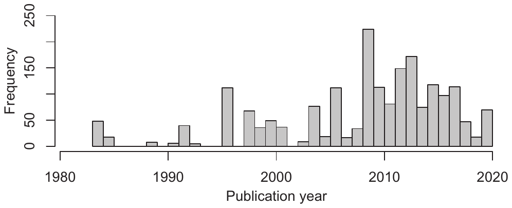
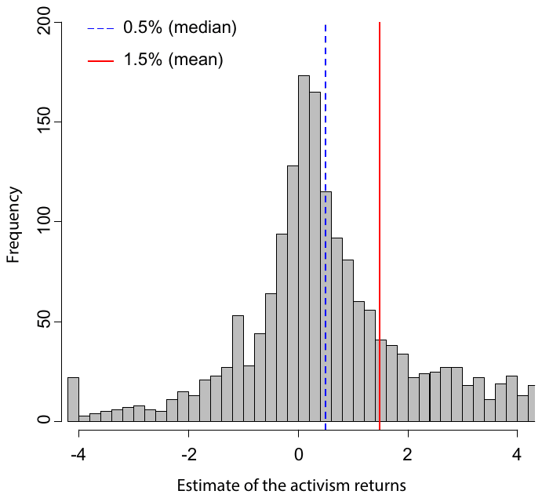
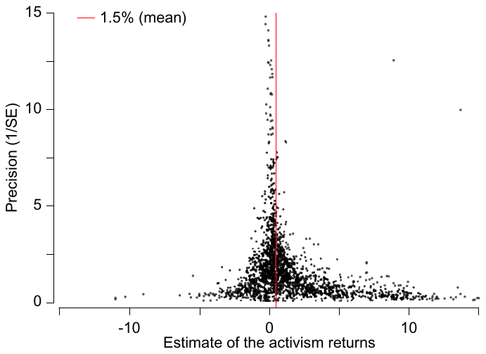
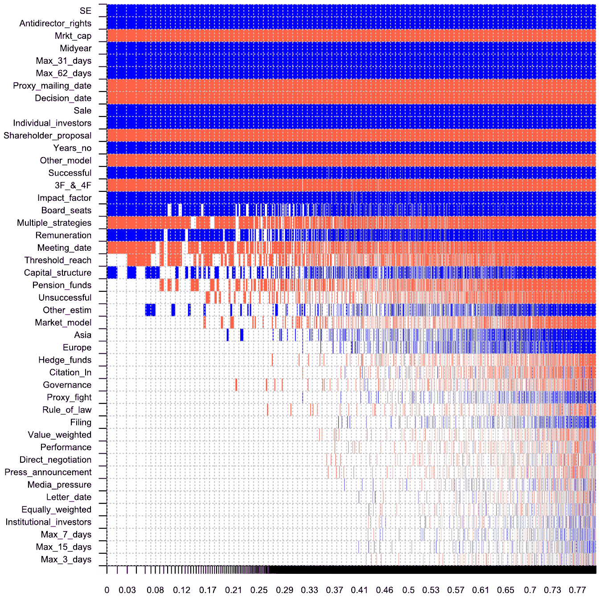

Does Shareholder Activism Create Value? A Meta-Analysis
Josef Bajzik, Tomas Havranek, Zuzana Irsova, Jiri Novak (2025), "Does Shareholder Activism Create Value? A Meta-Analysis." Corporate Governance: An International Review 33(5): 1039-1061. https://doi.org/10.1111/corg.12637.
Josef Bajzik1,2 | Tomas Havranek1,3,4 | Zuzana Irsova1 | Jiri Novak1
1Institute of Economic Studies, Faculty of Social Sciences, Charles University, Prague, Czech Republic | 2Faculty of Finance and Accounting, Prague, Czech Republic | 3Meta-Research Innovation Center, Stanford, Czech Republic | 4Centre for Economic Policy Research, London, UK
Correspondence: Josef Bajzik (bajzik22@seznam.cz)
Received: 15 May 2024 | Revised: 20 December 2024 | Accepted: 30 December 2024
Funding: Bajzik acknowledges support from the Charles University, project GA UK no. 291223 and from the Prague University of Economics and Business (Institutional Research Support grant no. IP100040). Havranek and Novak acknowledge support from the Czech Science Foundation (grant 24-11583S). Irsova acknowledges support from the Czech Science Foundation (grant 23-05227M). The project was supported by the Charles University Research Centre program UNCE24/SSH/020, Cooperatio program ECON, and the NPO "Systemic Risk Institute" number LX22NPO5101 funded by the European Union-Next Generation EU (Ministry of Education, Youth and Sports, NPO: EXCELES).
Keywords: corporate governance, investor protection, meta-analysis, selective reporting, shareholder activism, value created
Abstract
Research Question/Issue: This study identifies the determinants of shareholder value created by investor activism. It quantifies and corrects the pool of published empirical estimates for bias due to the selective reporting of empirical results. It examines how various institutional, investor, and research design characteristics affect the shareholder value created by activism.
Research Findings/Insights: Using a meta-analysis of 1973 estimates from 67 studies published between 1983 and 2021, we document that, after adjusting for selective reporting, activism creates a positive shareholder value ranging from 0% to 1.5%, which is smaller than commonly thought. More value is created in settings with better shareholder rights protection and in smaller markets. Activism by individual investors, more confrontational approaches, and campaigns aimed at the sale of the target company enhance firm value more.
Theoretical/Academic Implications: Our study identifies a specific channel through which the quality of institutional settings mitigates the conflict envisaged by agency theory between firm owners and managers. Our comprehensive synthesis of prior research literature also guides researchers in interpreting and comparing results reported in prior studies and helps them make more informed research design choices in future studies.
Practitioner/Policy Implications: Exploiting the heterogeneity in prior studies, our study informs investors about the value that specific forms of activism create, allowing them to better trade off the costs and benefits of alternative approaches. It also informs regulators about the relevance of institutional characteristics and offers estimates of the relative effectiveness of activism campaigns by various sponsors. These insights help in seeking optimal ways of regulating corporate governance and financial markets.
1 | Introduction
We study the determinants of the value created by shareholder activism. Shareholder activism has become an increasingly prominent feature of corporate governance. The Economist (2023) argues that the weakening disciplinary oversight by financial markets due to the rise of passive investing, lower interest rates, and environmental, social, and governance (ESG) considerations makes shareholder activism increasingly important. Times (2020) states that companies nowadays face more shareholder activism than ever before. The article cites Jim Rossman, the head of shareholder advisory at Lazard, who says that "activism has become a permanent feature of the corporate landscape". In their recent review, Lazard's Capital Market Advisory Group observes a global resurgence of shareholder activism as challenging macroeconomic conditions give urgency to performance improvements (Lazard 2022). The report points out that much of the activism targets technology companies, which constitute the backbone of the modern economy. The report also mentions the increasing popularity of settlements relative to proxy fights to achieve board representation and the growing number of first-time activists. This implies that more owners than before are ready to take the initiative and actively influence the ways companies are run. Thus, shareholder activism has become increasingly important and widespread.
Observations of the recent trends made by Lazard (2022) are mostly consistent with prior academic research, which documents a broad trend away from shareholder proposals on remuneration or voting practices, often initiated by pension funds (Holderness and Sheehan 1985; Wahal 1996; Smith 1996), towards direct negotiation with management and potentially also litigation (Denes, Karpoff, and McWilliams 2017). The increasing engagement of hedge funds and their readiness to coordinate the activity of like-minded shareholders have transformed the challenge that activism poses (Boyson and Mooradian 2011; Bessler, Drobetz, and Holler 2015; Becht et al. 2017). Goranova and Ryan (2014) argue that shareholder activism has become a dynamic institutional force and is a subject of study in a rapidly increasing body of scholarly literature that affects numerous disciplines. The increasing prominence of shareholder activism is reflected in extensive empirical research that analyzes its impact. Figure 1 shows the number of estimates of price responses to shareholder activism announcements published in research articles between 1980 and 2020. This surging research stream addresses different forms of activism, is conducted based on diverse data samples, and employs various methodological approaches. It is thus worthwhile to aggregate and synthesize these diverse findings, adjust them for potential bias due to the selective reporting of empirical results, and systematically analyze how the value created by shareholder activism varies with the quality of the institutional setting and other potentially relevant institutional, investor, and research design characteristics.

In this paper, we perform a meta-analysis of 1973 estimates of stock price responses to shareholder activism campaigns collected from 67 studies published between 1983 and 2021. A meta-analysis constitutes an effective way of estimating the "true effect" in settings where there is an extensive pool of prior empirical results, based on different data samples and using various methodologies (Stanley and Doucouliagos 2012; Habersang et al. 2019). The coverage of activism campaigns differs across jurisdictions and over time (Becht et al. 2017; Maffett, Nakhmurina, and Skinner 2022), which makes it challenging for researchers to comprehensively study the phenomenon. Data on activism are scattered. Many studies use diverse, sometimes hand-collected, and often fairly small data sets (e.g., Cai and Walkling 2011; Krishnan, Partnoy, and Thomas 2016; Matsusaka, Ozbas, and Yi 2019; Weber and Zimmermann 2013). For example, a well-cited study by Matsusaka, Ozbas, and Yi (2019) uses a hand-collected data set covering only 6 years. Furthermore, Weber and Zimmermann (2013) and Krishnan, Partnoy, and Thomas (2016) use data sets covering only 4 years, and Cai and Walkling (2011) uses data for just 3 years. The median length of the sample period in primary studies on shareholder activism is only 8.3 years. Empirical results based on these samples may be affected by the regulatory framework and macroeconomic conditions specific to a given setting and time. This may compromise the generalizability of the reported findings and contribute to substantial heterogeneity in the reported estimates. Thus, it seems appropriate to systematically examine these diverse findings by means of a meta-analysis.
Performing a meta-analysis also allows us to adjust prior findings for biases that may arise due to the selective reporting of empirical estimates and quantify how much shareholder value activism creates after correcting for this bias. Selective reporting may result from authors' and editors' tendencies to publish results that are (i) consistent with their a priori expectations and/or with prior empirical findings and (ii) statistically significant. Economists may consider activism an essential corporate governance mechanism to overcome agency problems (Jensen and Meckling 1976; Jensen 1986). They may mistrust findings that suggest otherwise and may be prone to report results that conform with the view that shareholder activism is beneficial and enhances firm value (Gillan and Starks 2007). We use several methods to detect and correct for the impact of potential selective reporting, including recent state-of-the-art approaches that are reliable even when the conventional assumption of a linear association between the estimates and their standard errors is violated (Andrews and Kasy 2019; Bom and Rachinger 2019; Bruns et al. 2019; Furukawa 2019; Simonsohn, Nelson, and Simmons 2014b; 2014a). Using this multitude of detection techniques, we observe that empirical estimates are indeed reported selectively, and numerically imprecise estimates are more likely to be published when they are high rather than low or negative. We also observe a clustering of test statistics above the conventional levels of statistical significance at 5% and 1%. Selective reporting biases the pool of empirical results reported in the research literature. We find that, after correcting for this bias, the value created by shareholder activism is positive but much smaller than commonly proposed. Our estimates range from 0% to 1.5%, depending on the estimation technique.
Besides correcting prior empirical results for reporting bias, our large dataset also allows us to simultaneously examine the effect of a number of characteristics that may systematically affect the value activism creates. We codify more than 50 variables that capture various aspects of the estimates reported in the primary studies. These characteristics include the type of activism sponsors, the objectives these sponsors have, the approaches they use to achieve these objectives, and their success in reaching their goals. In addition, we consider the geographic regions where activism takes place and several institutional characteristics, including the quality of shareholder protection, the rule of law, and the size of the country's stock market relative to the size of the economy. We are also able to examine the impact of research design choices, such as the type of event around which the price responses are measured, the length of the event window, the choice of the returns model used to compute abnormal returns, the type of weighting of assets in the reference portfolio, and the estimation method. We also consider the recency and the length of the primary data set. Finally, we measure two publication quality characteristics: the impact factor of the research journal where the primary study is published and the normalized number of citations it has generated. We exploit the heterogeneity in these characteristics across the primary studies to generate novel insights about general patterns in these estimates that would be infeasible to gain from any individual primary study relying on a single data set.
Our approach is inspired by Holderness (2018), who performs a meta-analysis of the stock price reaction to equity issuances by public corporations. Holderness (2018) collects his dataset of price response estimates from primary studies conducted in various regulatory settings that differ in the requirements for mandatory shareholder approvals of equity issues. Pooling the data from a large number of primary studies, Holderness (2018) shows that the popularity of various types of equity issues and the shareholder value their announcements create (or destroy) crucially depend on whether there is a mandatory requirement for shareholder approval of equity issuances in a given regulatory setting. Such a conclusion could not be drawn from any primary study based on a data set from a single regulatory environment. Following the same research strategy, we study the interplay between several characteristics that vary across the individual estimates we collect from the primary studies and examine whether they systematically affect the estimated magnitude of the value created by shareholder activism.
We first examine whether the quality of a country's institutional framework and the prominence of its financial markets in the economy matter for the effectiveness of shareholder activism. Extensive prior research literature suggests that the quality of institutions and the strength of legal protection for investors are relevant for the development of capital markets and, ultimately, for economic growth (e.g., Djankov et al. 2008; La Porta et al. 1997; 1998). We find it plausible to expect these institutional characteristics to also be important for shareholders' ability to successfully conduct activism campaigns. Therefore, we predict that activism should be more effective in creating shareholder value in settings that better protect investor rights. Consistent with this intuition, Judge, Gaur, and Muller-Kahle (2010) study the antecedents of shareholder activism across various countries and conclude that national legal systems may strengthen the power of financially motivated shareholder activists, which may explain why financial activism is generally stronger in common law countries. Similarly, Katelouzou (2014) analyzes 432 activist hedge fund campaigns in 25 countries and concludes that minimum protection of minority shareholder rights is essential for hedge fund activists to engage, and the choices of their objectives and strategies depend on the nature of the legal infrastructure that regulates hedge fund activism.
Other studies exploit the institutional settings of specific countries. Yeh (2014a) study whether legally binding shareholder resolutions in Japan can pressure management to improve firm performance and conclude that the institutional framework may support large shareholders in becoming activists and disciplining entrenched management. Girard (2009) observes an enhanced role of investor associations in successful activism campaigns in France after a reform strengthening legal enforcement to protect minority shareholders. Bianchi and Enriques (2000) report the limited success of the Italian government in increasing the protection of minority shareholders by fostering greater activism by institutional investors. Prior research also suggests that local corporate law may be more or less conducive to the formation of activist alliances (Bainbridge 2005), which tend to boost activists' chances of success (Artiga Gonzlez and Calluzzo 2019; Crespi and Renneboog 2010).
In terms of investor protection at the organizational level, Foroughi et al. (2019) find that hedge fund activists with better investor protection outperform those with poor investor protection. They suggest that better investor protection is associated with lower agency costs, more efficient investments, and higher equity valuation. However, Foroughi et al. (2019) also observe that the effect of better investor protection in activist hedge funds is realized in target companies only after 1 year, which suggests that market participants do not immediately appreciate the importance of these differences.
In this paper, we complement the above-mentioned studies by documenting that better country-level investor protection has a reliably positive impact on the effectiveness of investor activism. In comparison to Foroughi et al. (2019), we observe this effect even in short-term windows surrounding key events in activism campaigns. To ensure that our results are driven by systematic differences in institutional framework quality across countries rather than by potential idiosyncratic differences between geographic regions, we control for the main geographic regions where most activism takes place. Traditionally, most shareholder activism research has been based on data from the United States (USA) (e.g., Barber 2009; Holderness and Sheehan 1985; Morgan and Poulsen 2001). Nevertheless, more recently, an increasing number of studies use data from Europe (e.g., Bassen, Schiereck, and Thamm 2016; Becht et al. 2009; Bessler, Drobetz, and Holler 2015; Filatotchev and Dotsenko 2015) and Asia (e.g., Azizan and Ameer 2012; Becht et al. 2017; Hamao and Matos 2018; Yeh 2014b). However, only a limited number of prior studies examine the differences across geographic regions (e.g., Bassen, Schiereck, and Schuler 2019; Becht et al. 2017; Cziraki, Renneboog, and Szilagyi 2010; Maffett, Nakhmurina, and Skinner 2022). Differences in institutional settings may affect both the tools available to shareholder activists and their incentives. Our analysis allows us to evaluate the explanatory power of this regional classification relative to systematic institutional patterns. In untabulated results (available upon request), we verify that our finding on the strongly positive impact of investor protection through antidirector rights is robust to excluding the categorization of individual geographic regions.
We also study if the value created by shareholder activism varies with the type of activism sponsors, their objectives, and their success. Boyson, Ma, and Mooradian (2022) argue that even though prior research on hedge fund activism typically classifies activists as a single group, various types of activists are likely to exhibit different skills depending on their past experience. Sponsors differ in the strength of their incentives to enhance firm value and sensitivity to the risk of potential failure. For instance, individual sponsors typically keep much of their own wealth in targeted firms, and so they internalize much of the value potentially created by successful activism campaigns (e.g., Bassen, Schiereck, and Schuler 2019; Holderness and Sheehan 1985; Venkiteshwaran, Iyer, and Rao 2010). Hence, they may pursue their goals more tenaciously than other investors. Within institutional investors, hedge funds have both the incentives and the flexibility to pursue aggressive activism campaigns. High-performance fees give hedge fund managers strong incentives to enhance firm value (Bebchuk et al. 2020; Bessler, Drobetz, and Holler 2015; Brav et al. 2008a; Klein and Zur 2009; Krishnan, Partnoy, and Thomas 2016). The asymmetric nature of pay-offs encourages them to take risks (Stulz 2007; Yang et al. 2022). Light regulation and limited disclosure requirements help hedge funds accumulate larger ownership stakes and maintain flexibility in pursuing their goals (Brav et al. 2008a). The "lock-up" periods may give them greater maneuvering space to launch and reap the benefits of protracted activism campaigns. Hedge funds also frequently co-ordinate activism campaigns supported by several rather than one hedge fund (in a so-called "wolf pack") (Becht et al. 2017; Coffee and Palia 2016; Wong 2020). Thus, it is plausible to expect hedge fund activism to generate significant shareholder value. Several prior studies distinguish between various activism sponsors (e.g., Filatotchev and Dotsenko 2015; Renneboog and Szilagyi 2011b). Following this research, we distinguish between various activism sponsors, i.e., individual investors and their coalitions, hedge funds (e.g., Brav, Jiang, and Kim 2010; Weber and Zimmermann 2013), pension funds (e.g., Carleton, Nelson, and Weisbach 1998; Del Guercio and Hawkins 1999; English, Smythe, and McNeil 2004; Nelson 2006), and we evaluate how they differ in their ability to generate shareholder value.
Shareholder activism can be conducted in various ways that may differ in their effectiveness in generating shareholder value (e.g., Cunat, Gine, and Guadalupe 2012; Denes, Karpoff, and McWilliams 2017; Ferri and Sandino 2009; Filatotchev and Dotsenko 2015; Karpoff, Malatesta, and Walkling 1996; Prevost, Rao, and Williams 2012; Renneboog and Szilagyi 2011a; Stathopoulos and Voulgaris 2016; Wahal 1996). More confrontational approaches may be more costly but may also have a greater impact (Goranova and Ryan 2014). Denes, Karpoff, and McWilliams (2017) report substantial value created by proxy fights, arguably one of the most confrontational methods often intended to overcome managerial resistance to proposed changes. Flugum, Lee, and Souther (2022) show that outside investors' knowledge of pending activist campaigns increases activists' likelihood of pursuing and winning a proxy fight. Activism may also seek different objectives (Brav et al. 2008a; Greenwood and Schor 2009; Rose and Sharfman 2014). Rose and Sharfman (2014) propose two primary objectives: (i) business strategy changes aimed at improving firm performance (Bebchuk et al. 2020; Bessler, Drobetz, and Holler 2015; Krishnan, Partnoy, and Thomas 2016) and (ii) activism aimed at corporate governance improvements (Karpoff, Malatesta, and Walkling 1996; Mulherin and Poulsen 1998). In addition, Brav et al. (2008a) and Greenwood and Schor (2009) study activism intended to generate value by forcing the firm to become an acquisition target. We group activism approaches and objectives into several categories and examine how the price response varies for the individual categories.
We further examine the importance of activism's success (e.g., Alexander et al. 2010; Becht et al. 2009; Boyson, Gantchev, and Shivdasani 2017; Cunat, Gine, and Guadalupe 2012; Mulherin and Poulsen 1998). If activism is beneficial, it is natural to expect more value to be created when it succeeds in achieving its objectives (Boyson, Gantchev, and Shivdasani 2017). Nevertheless, it is not obvious that success is essential for enhancing firm performance. If shareholder activism creates value by challenging inefficient managerial practices (Jensen and Meckling 1976; Jensen 1986), even unsuccessful campaigns may suffice to discipline the management and prompt performance improvements. Hence, investigating the importance of activism's success offers additional insights into the nature of the underlying mechanism.
We test how these and other research design and publication quality characteristics affect the reported estimates of value created by shareholder activism. We use Bayesian Model Averaging (BMA) to address the model uncertainty problem that arises when the set of determinants of the dependent variable is not a priori defined (Steel 2020). BMA considers various combinations of "candidate" explanatory variables and identifies those that are most important in explaining the variation in the dependent variable (Eicher, Papageorgiou, and Raftery 2011; Feldkircher and Zeugner 2012; Moral-Benito 2015; Raftery, Madigan, and Hoeting 1997). This technique allows us to address multicollinearity issues that may arise when considering numerous potentially relevant variables (George 2010). Due to its flexibility, BMA is frequently used for meta-analyses (e.g., Bajzik et al. 2020; Bajzik 2021; Cazachevici, Havranek, and Horvath 2020; Gric, Bajzik, and Badura 2021; Matousek, Havranek, and Irsova 2022).
Our results identify several institutional, investor, and research design characteristics that are relevant for explaining the variation in the reported estimates of the shareholder value that activism creates. Most notably, we observe that shareholder activism is more effective in settings where investor rights are better protected. This finding suggests that the quality of the institutional framework that governs the relationship between shareholders and managers is crucial for mitigating the agency problems that arise due to the separation of ownership and control in firms (Jensen and Meckling 1976; Jensen 1986). We also observe more value created by shareholder activism in equity markets that are smaller relative to the size of the economy. Furthermore, we document higher value creation in shareholder activism conducted by individual investors, by means of more confrontational approaches, in campaigns aimed at the target company sale, and when activists eventually achieve their goals. These findings provide useful insights about the relative effectiveness of various kinds of activism. We also document the significant impact of several research design choices. Estimates of value created by shareholder activism tend to be higher when measured across event windows longer than 15 days, when simpler approaches to adjust for the normal rate of returns are employed, and when more recent and longer data sets are used. We also observe that studies published in more influential academic journals report higher estimates of value created by shareholder activism.
Our paper makes several important contributions to prior research literature. First, documenting the crucial role that the protection of investor rights plays in fostering effective shareholder activism helps to better understand how the quality of the institutional framework shapes the relationship between economic agents. While this finding is consistent with extensive prior research on the importance of institutions for economic development (including Nobel-Prize-winning contributions, e.g., Acemoglu and Robinson 2012), our results are novel in pointing out a specific channel through which a well-designed institutional framework mitigates agency conflicts, promotes investment, and facilitates the efficient allocation of capital in the economy. We emphasize that this finding hinges on our exploitation of the heterogeneity of a large pool of estimates that we hand-collect from primary studies. It would be infeasible to obtain this result in any single study based on a dataset from a single institutional setting.
Second, we also provide novel insights about how incentives and flexibility to organize activism campaigns affect the effectiveness of campaigns by various activism sponsors. Performing a meta-analysis allows us to compare the value generated by the activism of individual investors and hedge funds while simultaneously controlling for any differences in how these sponsors conduct their campaigns. We can thus provide novel insights suggesting that hedge funds are very efficient in selecting their targets and approaches, which allows them to unconditionally generate substantial shareholder value even though, for a given kind of activism, their activity does not seem to outperform other investor types. In contrast, individual investors, who are likely even more incentivized and flexible than hedge funds, are able to generate superior shareholder value even for a given type of activism campaign.
Third, we quantify the bias due to the selective reporting of empirical results and adjust the pool of published estimates for the impact of this bias. Offering a corrected estimate of how much value shareholder activism creates is essential for policy decisions regarding the optimal regulation of financial markets and corporate governance. Fourth, we identify a number of research design characteristics that affect the magnitude of reported estimates. These findings aid both practitioners and researchers in interpreting and comparing empirical results presented in prior studies, enhance researchers' understanding of the likely impact of the employed methodology, and facilitate better-informed research design choices in future studies.
2 | Data Sample
Prior literature uses two broad approaches to measure the value created by shareholder activism. The event study approach, for example, Brown and Warner (1985), uses price responses to shareholder activism announcements as a proxy for the value activism creates. The price response is typically measured over fairly short return windows ranging from several days to a few months (Denes, Karpoff, and McWilliams 2017; Brav et al. 2008b). This approach essentially captures how marginal investors update their estimates of firm value based on the expected impact of shareholder activism. Provided that financial markets are reasonably efficient, the short-term stock price response reflects the re-evaluation of the firm's intrinsic value, that is, the incremental value activism creates. Thus, in this paper, we use the terms "price response" and "value creation" interchangeably.
The second approach examines performance improvements and long-run stock returns following activism campaigns (Mitchell and Stafford 2000). Even though the second approach is appealing due to its focus on the actual economic impact, it is subject to several important limitations. First, long-term estimates may be confounded with other factors unrelated to shareholder activism, for example, performance reversal in target companies (Filatotchev and Dotsenko 2015). Second, it is inherently challenging to estimate long-term abnormal stock returns (Croci 2007). Third, some activism is explicitly aimed at making the company an acquisition target (Greenwood and Schor 2009). This implies that its future performance as a stand-alone entity will no longer be available, which likely biases the available data. Thus, we restrict our attention to short-term price responses to shareholder activism campaigns.
Our data sample collection follows the guidelines proposed by Havranek et al. (2020). In the Supporting Information Appendix, we provide a comprehensive overview of our sample collection procedure. First, we inspect the lists of references in the following review articles on the impact of investor activism: Albuquerque, Fos, and Schroth (2022), Denes, Karpoff, and McWilliams (2017), and Filatotchev and Dotsenko (2015). The articles included in Denes, Karpoff, and McWilliams (2017) constitute the first step in developing the set of studies from which we source our primary data. We observe the words that are frequently used to characterize these studies in the abstracts and introduction sections. Based on this observation, we develop a combination of keywords that we use in our search queries to systematically identify primary studies that might be relevant to our meta-analysis. We observe the list of articles generated by each query and iteratively modify the set of keywords to most precisely identify all relevant studies. This process generates the following combination of keywords: "abnormal return" AND "activist investor" OR "investor activism" OR "activist shareholder" OR "shareholder activism" OR "shareholder proposal" OR "contested proposal" OR "hedge fund activism" OR "proxy contest" OR "proxy fight" OR "negotiation" OR "litigation" OR "takeover". We verify that these keyword combinations successfully identify the relevant articles cited in the above-mentioned reviews. We also screen the lists of references in these articles to potentially identify additional relevant studies. We concluded our data collection at the end of March 2022. The final data set (including code) is available in the Supporting Information Appendix at meta-analysis.cz/activism.
We only collect stock returns estimates measured over short-run windows that we define as being fully contained within the 2-month period starting 30 days prior to the event day and ending 30 days after it (Brav et al. 2008b; Denes, Karpoff, and McWilliams 2017). To be able to perform our tests of selective reporting, we require the price response estimates to be accompanied by corresponding t-statistics, standard errors, or other statistics from which standard errors can be computed. When several measures are provided, we preferably collect corresponding standard errors over t-statistics and p-values.
Table 1 provides a list of the primary studies from which we source our estimates. In total, our data collection procedure yields 1973 estimates collected from 67 research articles. Figure 2 shows the histogram of the price response estimates in our sample. The number of primary studies that contain relevant estimates and the range of these estimates demonstrate the extensive empirical research on this topic. This underscores the benefits of aggregating these diverse findings by means of a meta-analysis. Figure 2 shows that the distribution of price response estimates is somewhat more dispersed than the normal distribution (excess kurtosis: 2.358, not tabulated). This points to substantial heterogeneity in the coefficients that we collect from the primary studies. The distribution is positively skewed (skewness: 1.499, not tabulated) with a mean value of 1.52% above the sample median of 0.50%. Our data set thus features a higher-than-expected frequency of positive observations, while the corresponding low or negative observations are less common. This finding is consistent with a propensity to discard some low or negative estimates of price responses to shareholder activism.
| Alexander et al. (2010) | Croci (2007) | Lee et al. (2018) |
|---|---|---|
| Anson et al. (2003) | Cunat, Gine, and Guadalupe (2012) | Lin, Huang, and Thiruvadi (2016) |
| Azizan and Ameer (2012) | Cziraki, Renneboog, and Szilagyi (2010) | Matsusaka, Ozbas, and Yi (2019) |
| Barber (2007) | DeAngelo and DeAngelo (1989) | Mietzner, Schweizer, and Tyrell (2011) |
| Barber (2009) | Del Guercio and Hawkins (1999) | Morgan and Poulsen (2001) |
| Barclay and Holderness (1991) | Dodd and Warner (1983) | Mulherin and Poulsen (1998) |
| Bassen, Schiereck, and Thamm (2016) | El-Khatib, Fogel, and Jandik (2017) | Nelson (2005) |
| Bassen, Schiereck, and Schuler (2019) | English, Smythe, and McNeil (2004) | Nelson (2006) |
| Bebchuk et al. (2020) | Filatotchev and Dotsenko (2015) | Ong, Petrova, and Spieler (2010) |
| Becht et al. (2009) | Fortin et al. (2014) | Park, Selvili, and Song (2008) |
| Becht et al. (2017) | Ghosh, Owers, and Rogers (1992) | Prevost and Rao (2000) |
| Bessler, Drobetz, and Holler (2015) | Gillan and Starks (2000) | Prevost, Rao, and Williams (2012) |
| Bhabra and Wood (2014) | González and Calluzzo (2019) | Renneboog and Szilagyi (2011b) |
| Bizjak and Marquette (1998) | Goodwin and Rao (2014) | Smith (1996) |
| Borstadt and Zwirlein (1992) | Greenwood and Schor (2009) | Smythe, McNeil, and English (2015) |
| Boyson, Gantchev, and Shivdasani (2017) | Hamao and Matos (2018) | Stadler, Knyhausen-Aufseß, and Schweizer (2015) |
| Boyson and Pichler (2019) | Holderness and Sheehan (1985) | Strickland, Wiles, and Zenner (1996) |
| Brav et al. (2008a) | Chen and Feldman (2018) | Venkiteshwaran, Iyer, and Rao (2010) |
| Brav et al. (2008b) | Chen, Huang, and Yu (2020) | Wahal (1996) |
| Brav, Jiang, and Kim (2010) | Ikenberry and Lakonishok (1993) | Weber and Zimmermann (2013) |
| Cai and Walkling (2011) | Karpoff, Malatesta, and Walkling (1996) | Yang, Wang, and An (2012) |
| Carleton, Nelson, and Weisbach (1998) | Krishnan, Partnoy, and Thomas (2016) | Yeh (2014b) |
| Caton, Goh, and Donaldson (2001) |
Note: This table shows a list of the 67 primary studies, from which we source 1973 estimates of short-term stock price response to shareholder activism that constitute our sample.

3 | Selective Reporting
Selective reporting is a phenomenon that arises when authors and editors have a conscious or subconscious tendency to publish estimates that are consistent with their a priori expectations about the nature of the examined relationship or with previously published results and/or that are statistically significant (Ioannidis, Stanley, and Doucouliagos 2017). Research based on smaller datasets should sometimes generate counterintuitive results simply because a given dataset may, purely by chance, happen not to be representative of the entire population. While it may be considered reasonable to discard results that seem implausible given the presumed relationship or in light of prior findings, doing so distorts the pool of estimates published in the body of empirical research literature. Such a distortion may bias the perception of the overall strength of the studied relationship and lead to undue conclusions about the level of consistency of empirical evidence supporting it. This issue may be further compounded if researchers choose not to publish results that are inconsistent with prominent studies published in leading academic journals that "set the tone" for the general understanding of the nature of the relationship. Prior research documents selective reporting of results in numerous research settings in economics (Blanco-Perez and Brodeur 2020; Brown et al. 2023; Campos, Fidrmuc, and Korhonen 2019; Ugur, Awaworyi Churchill, and Solomon 2018) and finance (Astakhov, Havranek, and Novak 2019; Gric, Bajzik, and Badura 2021, Geyer-Klingeberg et al. 2018; Zigraiova and Havranek 2016; Yang et al. 2024).

Ioannidis, Stanley, and Doucouliagos (2017) conclude that the results published in research journals in economics tend to suggest a magnitude of a relationship that is, on average, twice as large as the true effect.
We find it plausible to expect selective publication in empirical research on the impact of shareholder activism because researchers may view it as a vital disciplining force to overcome agency problems and promote economic efficiency. Hence, they may be skeptical about results suggesting that shareholder activism is ineffective or even detrimental in performing this essential economic role. They may also be reluctant to submit articles that contain results inconsistent with key studies in the area (e.g., Cunat, Gine, and Guadalupe 2012; Gillan and Starks 2000; Matsusaka, Ozbas, and Yi 2019). Our meta-analysis allows us to assess how much the published empirical results are affected by selective reporting and to adjust the coefficients for the bias.
Following Egger et al. (1997), (Stanley 2005), (Havrnek and Irov 2010), and (Irov and Havrnek 2010), we start our analysis by examining a funnel plot depicted in Figure 3. The horizontal axis displays the value of the 1973 reported price response estimates. The vertical axis displays the precision of these estimates, defined as the inverse of their standard errors. The graph should have the shape of an inverted funnel because the most precise estimates should be centered around the sample mean, whereas the less precise estimates should be more dispersed. In the absence of any selective reporting, it should be symmetric, as less precise estimates that deviate from the sample mean should be equally likely to be published regardless of whether they are high, low, or even negative. In contrast, under selective publication, some of the imprecise estimates that are low or negative get discarded, which skews the figure. An asymmetric funnel plot thus suggests that estimates are reported selectively in some primary studies and that their mean value constitutes a biased estimate of the true effect.
A visual examination of Figure 3 suggests that the funnel plot is positively skewed. This indicates that imprecise estimates are more likely to be reported if they are high rather than low or negative. This finding provides initial suggestive evidence consistent with the proposition that the pool of empirical results on the value created by shareholder activism may be distorted by the absence of imprecise estimates that are low or negative (Bajzik 2023). Therefore, the mean value of these estimates overstates the true impact activism has on enhancing company value. The funnel plot suggests that the most precise estimates of the activism effect, which are least likely to be affected by selection, lie around 0%–1.5%. This finding of a small mean effect and substantial selection is supported by several rigorous models for correcting selective reporting, detailed in the Supporting Information Appendix due to space constraints.
4 | Activism Characteristics
Conceptually, there is considerable controversy over the merits and drawbacks of activism and over what kinds of activism are more beneficial than others (Brav et al. 2008b). The Economist (2023) suggests that "Activist hedge funds are often seen as villains who are nasty, brutish and focused on the short term. Sometimes the shoe fits. But more often activists are playing a role that is essential for shareholder capitalism." Activist campaigns may mitigate agency problems that arise between firm owners and managers due to the separation of ownership and control (Jensen and Meckling 1976; Jensen 1986). The Investor Forum, founded in 2014 by UK institutional investors, is explicitly intended to serve "as an 'escalation mechanism' when firms ignore individual investors or exhibit problems that worry many shareholders" (The Economist 2018). Shareholder activism may thus create value by initiating efficiency improvements, such as refocusing on profitable activities and reducing "empire-building" (Brav et al. 2008a; Brav et al. 2018; Klein and Zur 2009; Bebchuk, Brav, and Jiang 2015; Becht et al. 2017; Brochet, Ferri, and Miller 2021; Maffett, Nakhmurina, and Skinner 2022), and by improving tax efficiency (Cheng et al. 2012). Kang et al. (2022) observe that appointing independent directors nominated by activists tends to be associated with increases in firm value. Consistent with the proposition that activism tends to address cases when managers are not sufficiently responsive to owners' requests, Chapman et al. (2022) show that firms with a dedicated investor relations function are less often challenged by activists.
On the other hand, shareholder activism may be ineffective (Song and Szewczyk 2003) and distract managers from beneficial long-term projects (Brav et al. 2008b). Coffee and Palia (2016) raise concerns that shareholder activism, especially by hedge funds, may pursue short-term "pump and dump" schemes that temporarily boost dividend payouts but ultimately harm firms' long-term profitability. The threat of activism may also provoke undesirable preemptive behavior and defensive responses by management. Cherkes, Sagi, and Wang (2014) provide evidence that managers take action to deter potential challenges from activist shareholders. Prior research shows that activism constrains managerial control, lowers executive compensation, and increases executive turnover (Ferri and Sandino 2009; Brav, Jiang, and Kim 2010; Edmans and Holderness 2017).
Coffee and Palia (2016) argue that the threat of activism may induce defensive, short-term behavior, compelling managers to forego valuable long-term investments (especially in R&D) and prioritize short-term dividend payouts, potentially harming shareholder value in the long run. Some forms of activism may stifle innovation and threaten long-term value generation (Bourveau and Schoenfeld 2017; Maffett, Nakhmurina, and Skinner 2022). Ordez-Calafi and Bernhardt (2022) argue that in some settings, these costs may outweigh the benefits of disciplining managers. Activism can also turn confrontational, destabilizing companies (O'Rourke 2003), damaging reputations, and increasing the likelihood of lawsuits (Guo et al. 2021). Consistent with these risks, Guo et al. (2021) find that activism targets pay higher audit fees despite being more transparent and providing more frequent voluntary disclosures (Bourveau and Schoenfeld 2017). Activism may also hurt other stakeholders. Agrawal and Lim (2022) suggest that shareholder wealth gains from activism partly come from wealth transfers from employees. Hence, a priori, it is not obvious how beneficial shareholder activism is overall or which forms create the most value.
Goranova and Ryan (2014) argue that previous research has made substantial contributions toward understanding the complex nature of shareholder activism. Nevertheless, they also suggest that the heterogeneity of factors in shareholder activism poses numerous theoretical and methodological challenges for researchers. They note that empirical findings from prior research may be confounded by the habitual aggregation of different shareholder demands by multiple types of investors employing divergent activism methods. Corporate governance regulation should optimally balance the benefits of efficiency improvements against the costs of forgoing beneficial, innovative, long-term projects. The magnitude of value created by activism is a critical input for regulatory decisions. Additionally, understanding which kinds of activism are more beneficial than others is essential. In the second part of this paper, we exploit the heterogeneity of our sample to examine how different characteristics influence the reported magnitude of the value shareholder activism creates.
We consider several potentially relevant institutional, investor, and research design characteristics that may affect the reported estimates. In the Supporting Information Appendix, we provide definitions of these characteristics coded into explanatory variables used later in our analysis. Table 2 provides descriptive statistics for selected dummy variables that represent different, mostly exclusive, subsamples of our data. We winsorize all continuous variables at the top and bottom 1% and define additional indicators prefixed "Hi_" and "Lo_" to represent observations above and below the median of the full sample. Similarly, we define variables prefixed "Long_" and "Short_", as well as "Older_" and "Recent_".
| Variable | Nobs | Mean | SD | W.Mean | W.SD |
|---|---|---|---|---|---|
| All | 1,973 | 1.49 | 3.04 | 1.83 | 3.42 |
| Activism sponsors | |||||
| Hedge_funds | 467 | 2.42 | 3.72 | 3.10 | 3.51 |
| Pension_funds | 474 | 0.84 | 1.93 | 0.56 | 1.71 |
| Institutional_investors | 129 | 0.16 | 2.72 | 0.47 | 3.19 |
| Individual_investors | 66 | 2.99 | 4.21 | 4.17 | 4.69 |
| Sponsor_na (*) | 837 | 1.43 | 2.88 | 1.74 | 3.32 |
| Activism approaches | |||||
| Shareholder_proposal | 479 | 0.35 | 1.90 | 0.29 | 1.69 |
| Direct_negotiation | 98 | 1.85 | 3.06 | 2.11 | 3.48 |
| Proxy_fight | 432 | 2.37 | 3.53 | 2.57 | 4 |
| Multiple_strategies | 287 | 0.20 | 0.68 | 0.12 | 0.78 |
| Media_pressure | 103 | 1.12 | 2.64 | 3.20 | 4.46 |
| Approach_na (*) | 574 | 2.43 | 3.60 | 3.21 | 3.71 |
| Activism objectives | |||||
| Performance | 302 | 0.71 | 1.92 | 0.78 | 2.04 |
| Governance | 350 | 0.25 | 1.75 | 0.28 | 1.93 |
| Board_seats | 360 | 2.48 | 3.62 | 2.07 | 3.72 |
| Remuneration | 117 | 0.65 | 1.93 | 1.32 | 2.58 |
| Capital_structure | 54 | 2.48 | 3.18 | 2.33 | 2.67 |
| Sale | 210 | 3.59 | 4.25 | 4.12 | 4.35 |
| Objective_na (*) | 580 | 1.34 | 2.78 | 2.23 | 3.52 |
| Activism's success | |||||
| Successful | 178 | 3.14 | 3.99 | 3.07 | 4.26 |
| Unsuccessful | 150 | 1.68 | 3.63 | 2.32 | 4.42 |
| Outcome_na (*) | 1,645 | 1.30 | 2.80 | 1.61 | 3.12 |
| Geographic regions | |||||
| Europe | 457 | 1.80 | 3.16 | 2.78 | 3.73 |
| Asia | 139 | 1.23 | 2.22 | 1.21 | 1.93 |
| North_America (*) | 1377 | 1.41 | 3.07 | 1.70 | 3.42 |
| Institutional setting | |||||
| Lo_antidirector_rights | 499 | 1.54 | 3.04 | 2.42 | 3.49 |
| Hi_antidirector_rights | 1,474 | 1.47 | 3.04 | 1.7 | 3.39 |
| Lo_rule_of_law | 787 | 1.16 | 2.55 | 1.41 | 3.05 |
| Hi_rule_of_law | 1,186 | 1.71 | 3.31 | 2.13 | 3.63 |
| Lo_mrkt_cap | 980 | 1.48 | 3.13 | 1.98 | 3.56 |
| Hi_mrkt_cap | 993 | 1.5 | 2.95 | 1.71 | 3.3 |
| Variable | Nobs | Mean | SD | W.Mean | W.SD |
|---|---|---|---|---|---|
| Event types | |||||
| Press_announcement | 294 | 1.08 | 2.41 | 1.11 | 2.59 |
| Proxy_mailing_date | 134 | -0.45 | 1.33 | -0.27 | 1.35 |
| Meeting_date | 186 | 0.44 | 1.42 | 0.24 | 1.62 |
| Filing | 300 | 1.87 | 3.17 | 3.38 | 3.98 |
| Decision_date | 227 | 1.87 | 3.80 | 0.51 | 2.84 |
| Letter_day | 109 | 0.48 | 0.94 | 0.52 | 1.01 |
| Threshold_reach | 114 | 0.96 | 3.28 | 4.52 | 4.59 |
| First_announcement (*) | 609 | 2.39 | 3.36 | 2.91 | 3.60 |
| Event windows | |||||
| Max_3_days | 692 | 0.68 | 1.80 | 1.27 | 2.80 |
| Max_7_days | 203 | 1.02 | 2.28 | 0.63 | 2.28 |
| Max_15_days | 444 | 1.07 | 2.65 | 1.29 | 3.23 |
| Max_31_days | 293 | 2.17 | 3.92 | 2.61 | 4.29 |
| Max_62_days | 182 | 5.52 | 4.17 | 4.83 | 3.95 |
| The_day (*) | 159 | 0.92 | 1.81 | 1.51 | 2.21 |
| Returns models | |||||
| Market_adjusted | 663 | 2.23 | 3.54 | 1.99 | 3.35 |
| Market_model | 837 | 1.10 | 2.62 | 1.90 | 3.57 |
| 3F_&_4F | 186 | 1.21 | 2.28 | 1.74 | 2.12 |
| Other_model (*) | 287 | 1.10 | 3.07 | 1.47 | 3.53 |
| Index weighting | |||||
| Equally_weighted | 690 | 1.18 | 2.91 | 1.42 | 3.28 |
| Value_weighted | 596 | 1.26 | 2.61 | 1.63 | 3.05 |
| Weighting_na (*) | 687 | 1.99 | 3.43 | 2.42 | 3.75 |
| Estimation method | |||||
| Other_estim | 123 | 1.11 | 2.43 | 1.49 | 2.97 |
| OLS (*) | 1,850 | 1.52 | 3.08 | 1.85 | 3.44 |
| Sample characteristics | |||||
| Short_sample | 974 | 0.86 | 2.41 | 1.40 | 3.06 |
| Long_sample | 999 | 2.10 | 3.45 | 2.20 | 3.66 |
| Older_sample | 889 | 1.15 | 2.78 | 1.27 | 3.08 |
| Recent_sample | 1,084 | 1.77 | 3.21 | 2.40 | 3.64 |
| Publication characteristics | |||||
| Lo_imp_factor | 808 | 1.51 | 3.20 | 2.03 | 3.61 |
| Hi_imp_factor | 1,165 | 1.48 | 2.93 | 1.64 | 3.21 |
| Lo_cited | 982 | 1.28 | 2.97 | 1.61 | 3.52 |
| Hi_cited | 991 | 1.70 | 3.10 | 2.08 | 3.28 |
Note: The table presents descriptive statistics for different subsamples of data, which are defined based on the shareholder activism characteristics we expect to affect the value activism creates. Nobs: number of estimates within each subsample. Mean and SD refer to the mean and standard deviation; W.Mean and W.SD refer to the mean and standard deviation weighted by the inverse of the number of estimates reported in each study. The asterisk (*) denotes a reference category for different groups of subsamples (dummy variables omitted from our later analyses). For a detailed description of all the variables, see Supporting Information Appendix.
The first row of Table 2 reports the descriptive statistics for the full sample of 1973 observations collected from 67 studies. As discussed earlier, the distribution of estimates is positively skewed, with a mean value of 1.49% higher than the median value of 0.50%. This skewness is evident when comparing the distance between the median and the lower and upper percentiles. For instance, the 5th percentile is 2.39 percentage points below the median, whereas the 95th percentile is 8.15 percentage points above it. A similar pattern is observed for most individual subsamples, suggesting that positive skewness is not confined to specific subgroups.
In addition to the simple mean, Table 2 also reports the mean value weighted by the inverse of the number of estimates reported in individual studies, ensuring all studies have equal impact. For the full sample, the weighted mean (W.Mean) of 1.83% exceeds the simple mean of 1.49%, implying that reported estimates are slightly higher in smaller studies. However, this difference is modest, indicating that our results are unlikely driven by a few large studies. For brevity, we comment on the descriptive statistics of the subsamples in the Supporting Information Appendix.
4.1 | BMA
In formally examining the importance of the explanatory variables, we face model uncertainty. Prior literature does not provide clear guidance on a specific set of conceptually grounded determinants of the impact of shareholder activism on firm value. Including all potentially relevant variables in a single regression may be problematic due to multicollinearity and inefficiency. To address this issue, we use BMA, which considers various combinations of potential determinants and evaluates how consistently they explain the variation in the dependent variable (e.g., Moral-Benito 2015). A more detailed description of BMA is provided in the Supporting Information Appendix. Recent applications of BMA in economics and finance meta-analyses include Elminejad et al. (2023), Ehrenbergerova, Bajzik, and Havranek (2023), Havranek et al. (2024), Kroupova, Havranek, and Irsova (2024), and Opatrny et al. (2025).
Figure 4 visualizes our BMA results. The alternative regression specifications in columns are ordered based on their posterior model probability (PMP), represented by each column's width. The individual explanatory variables in rows are sorted based on their posterior inclusion probability (PIP), with the most relevant variables listed at the top. Blue cells (darker in grayscale) represent a positive association between a given explanatory variable and the dependent variable, and red cells (lighter in grayscale) denote a negative association. The two colors reflect the positive and negative incremental effects of a given variable relative to the baseline category in a given group, denoted with an asterisk (“*”) in the table with variable definitions in the Supportive Information Appendix. A positive (negative) coefficient implies that investor activism with a given characteristic ceteris paribus generates more (less) shareholder value than activism classified in the reference group.
Figure 4 shows that about half of the variables we consider are included in the regression models with the best fit. BMA identifies four models with PMP considerably above the remaining models. These four models share 20 explanatory variables. It is reassuring to observe that the associations between all 20 variables and the dependent variable are consistent across all the models considered in the BMA, indicating that the inclusion of other variables does not affect the nature of the identified associations.

To assess the importance of individual explanatory variables, we tabulate our BMA results in Table 3. The left panel of the table shows the PIP for individual explanatory variables, as well as their posterior mean (P. mean) and posterior standard deviation (P. SD). The latter two measures are computed from the distribution of slope coefficients across the various regression specifications considered in BMA. The posterior mean represents the typical value of a particular coefficient, and its standard deviation shows how the estimated coefficients vary across different combinations of explanatory variables.
We interpret our findings primarily based on the BMA estimates. Nevertheless, for comparison with frequentist econometric approaches, the right panel of Table 3 also shows OLS results from a regression model that includes all variables with PIP greater than 0.75 (denoting a “substantial” effect based on Jeffreys 1961 and Raftery 1995). We report slope coefficients (Coef.), their standard errors (SE), and the corresponding p-values.
Consistent with the univariate statistics reported in the Supporting Information Appendix, the multivariate results in Table 3 provide strong evidence of a positive association between the price response estimates and their standard error (SE). As shown in the ordering of variables in Figure 4, SE has the highest PIP among all explanatory variables. Table 3 shows that its posterior mean is positive (0.264%), and its PIP approaches 1.000. This result is corroborated by the OLS model, where the slope coefficient is 0.270% (very close to the BMA estimate) and statistically significant at the 1% level (p-value 0.007). These results strongly support the proposition that the reporting of empirical estimates suffers from selective reporting, likely distorting the pool of available evidence and biasing the understanding of how much shareholder value activism creates.
Table 3 also identifies 13 additional variables with PIP greater than 0.99, conventionally interpreted as “decisive” for explaining variation in the dependent variable (Jeffreys 1961; Raftery 1995). These variables relate to the type of activism sponsors, their objectives, the approaches they use, and the institutional setting within which activism occurs. Reported estimates are also influenced by research design choices and data set characteristics, such as the types of events around which activism's impact is measured, the length of event windows, the choice of a model for normal returns, and the length and recency of the data sample used in primary studies. Below, we discuss these results.
Activism sponsors.
Consistent with our univariate results, Table 3 shows that stock prices respond more favorably to announcements of activism conducted by individual rather than institutional investors. The posterior mean for Individual_investors of 1.729 is numerically close to the slope coefficient in the OLS regression of 1.761. This suggests that the price response to announcements of individual investors' activism is, on average, more than 1.5 percentage points higher relative to the reference category. The result generated by BMA is strongly statistically significant, with PIP approaching 1.000. The slope coefficient based on OLS approaches the conventional level of statistical significance at 5% (p-value 0.062). These findings are consistent with our earlier proposition that individual investors have strong incentives to engage in value-enhancing changes and may be better positioned to withstand temporary increases in stock price volatility resulting from conflicts with the firm's management. This result aligns with prior research by Bassen, Schiereck, and Schuler (2019), who discuss the prominent role of individual shareholder activists, but contrasts with Filatotchev and Dotsenko (2015), who report little or negative value creation by individual shareholders' activism.
PIP values below 0.5 are observed for the remaining three types of activism sponsors–hedge funds, pension funds, and other institutional investors. This suggests that after accounting for various institutional investor and research design characteristics, the value generated by these types of investors is not statistically different from the reference category. Thus, individual investors stand out from other investor types in their effectiveness at performing a given type of activism. Individual investors have the strongest economic incentives to generate value and the greatest flexibility in implementing their activism campaigns, which may make them more effective in generating shareholder value than other investors.
| P. mean | P. SD | PIP | Coef. | SE | p-value | |
|---|---|---|---|---|---|---|
| Constant | −5.181 | NA | 1.000 | −5.133 | 1.508 | 0.001 |
| SE (selective reporting) | 0.264 | 0.043 | 1.000 | 0.270 | 0.098 | 0.007 |
| Activism sponsors | ||||||
| Hedge_funds | −0.068 | 0.198 | 0.131 | |||
| Pension_funds | −0.237 | 0.320 | 0.407 | |||
| Institutional_investors | 0.003 | 0.045 | 0.017 | |||
| Individual_investors | 1.729 | 0.338 | 1.000 | 1.761 | 0.928 | 0.062 |
| Activism approaches | ||||||
| Shareholder_proposal | −1.319 | 0.225 | 1.000 | −1.241 | 0.299 | 0.000 |
| Direct_negotiation | −0.001 | 0.041 | 0.016 | |||
| Proxy_fight | 0.010 | 0.070 | 0.033 | |||
| Multiple_strategies | −0.575 | 0.338 | 0.811 | −0.735 | 0.249 | 0.004 |
| Media_pressure | 0.003 | 0.051 | 0.018 | |||
| Activism objectives | ||||||
| Performance | −0.002 | 0.035 | 0.019 | |||
| Governance | −0.005 | 0.058 | 0.028 | |||
| Board_seats | 0.522 | 0.262 | 0.870 | 0.577 | 0.359 | 0.112 |
| Remuneration | 0.681 | 0.495 | 0.726 | |||
| Capital_structure | 0.367 | 0.511 | 0.390 | |||
| Sale | 1.612 | 0.258 | 1.000 | 1.545 | 0.621 | 0.015 |
| Activism's success | ||||||
| Successful | 0.803 | 0.269 | 0.964 | 0.840 | 0.529 | 0.117 |
| Unsuccessful | −0.214 | 0.324 | 0.353 | |||
| Geographic regions | ||||||
| Asia | 0.050 | 0.201 | 0.084 | |||
| Europe | 0.023 | 0.138 | 0.043 | |||
| Institutional setting | ||||||
| Antidirector_rights | 0.552 | 0.096 | 1.000 | 0.528 | 0.169 | 0.003 |
| Rule_of_law | −0.016 | 0.119 | 0.038 | |||
| Mrkt_cap | −0.020 | 0.003 | 1.000 | −0.018 | 0.004 | 0.000 |
| Event types | ||||||
| Press_announcement | −0.002 | 0.031 | 0.018 | |||
| Proxy_mailing_date | −1.615 | 0.317 | 1.000 | −1.333 | 0.625 | 0.037 |
| Meeting_date | −0.515 | 0.440 | 0.647 | |||
| Filing | 0.003 | 0.039 | 0.018 | |||
| Decision_date | −1.675 | 0.238 | 1.000 | −1.616 | 0.505 | 0.002 |
| Letter_date | −0.002 | 0.044 | 0.016 |
| P. mean | P. SD | PIP | Coef. | SE | p-value | |
|---|---|---|---|---|---|---|
| Threshold_reach | −0.487 | 0.450 | 0.602 | |||
| Event Windows | ||||||
| Max_3_days | 0.0005 | 0.016 | 0.013 | |||
| Max_7_days | 0.0003 | 0.022 | 0.013 | |||
| Max_15_days | −0.00003 | 0.018 | 0.013 | |||
| Max_31_days | 0.859 | 0.176 | 1.000 | 0.829 | 0.568 | 0.149 |
| Max_62_days | 3.026 | 0.237 | 1.000 | 3.106 | 0.570 | 0.000 |
| Returns models | ||||||
| Market_adjusted | 1.281 | 0.215 | 0.997 | 1.240 | 0.348 | 0.001 |
| Market_model | 0.929 | 0.204 | 0.997 | 0.916 | 0.353 | 0.012 |
| 3F_&_4F | −0.010 | 0.079 | 0.030 | |||
| Index weighting | ||||||
| Equally_weighted | 0.0001 | 0.019 | 0.014 | |||
| Value_weighted | −0.002 | 0.024 | 0.017 | |||
| Estimation method | ||||||
| Other_estim | 0.300 | 0.446 | 0.356 | |||
| Sample characteristics | ||||||
| Years_no | 0.072 | 0.017 | 0.999 | 0.071 | 0.037 | 0.062 |
| Midyear | 0.122 | 0.017 | 1.000 | 0.114 | 0.024 | 0.000 |
| Publication characteristics | ||||||
| Impact_factor | 0.210 | 0.095 | 0.910 | 0.200 | 0.124 | 0.112 |
| Citation_ln | 0.000 | 0.034 | 0.044 | |||
| #Observations | 1,973 | 1,973 | ||||
| #Studies | 67 | 67 |
Note: The table shows the results of the multivariate analysis of value creation determinants. The dependent variable is the price response to shareholder activism campaigns collected from 67 primary studies. The left part of the table includes results based on the BMA estimation. BMA employs uniform model prior (Eicher, Papageorgiou, and Raftery 2011) and dilution prior suggested by George (2010), which accounts for potential multicollinearity among variables. The right part presents the results of the “frequentist check” based on an OLS regression that includes the 20 explanatory variables that BMA identifies as most relevant for explaining the variation in the dependent variable that have PIP higher than 0.5 PIP denotes the posterior inclusion probability of a given variable in the “true” explanatory model. P. mean shows the posterior mean of the distribution of regression coefficients. P. SD represents the posterior standard deviation of the distribution of regression coefficients. Coef. denotes the slope coefficient based on the OLS estimation. SE shows the standard error of the slope coefficient in the OLS regression model. The p-value shows the probability of obtaining the result for a given explanatory variable under the assumption that the variable has no explanatory power (i.e., the null hypothesis is correct). Definition of all variables is available in the Supporting Information Appendix.
Prior research typically identifies hedge fund activism as highly value-enhancing (e.g., Becht et al. 2017; Denes, Karpoff, and McWilliams 2017). Consistent with this, the descriptive statistics in Table 2 show that both the simple mean (2.42%) and the weighted mean (3.10%) of reported price responses to hedge fund activism are the second highest, only slightly lower than the corresponding simple mean (2.99%) and weighted mean (4.17%) for individual investors. However, our multivariate analysis extends this understanding by showing that, despite these high unconditional mean values, after correcting for potential selective reporting and controlling for institutional, activism, and research design characteristics, the value generated by hedge funds is not statistically different from the value generated by other institutional investors. This does not diminish the contribution hedge funds make to improving firms' economic efficiency. Hedge funds appear smart in selecting their targets, settings, and methods of activism, and unconditionally, they generate substantial shareholder value. However, within a given context, hedge funds are no more effective than other institutional activists.
In contrast, our results indicate that individual investors are more effective in generating shareholder value even within a given activism context. These findings highlight the importance of accounting for the multitude of activism characteristics, adjusting for potential selective reporting and controlling for various activism types, contexts, and research design characteristics.
Activism approaches.
We next examine how price responses to shareholder activism differ across the individual approaches used by sponsors. We use “Approach_na” as the reference category, against which we benchmark the results on shareholder value created by other approaches. Consistent with descriptive statistics showing a lower simple mean for “Approach_na” (0.35%) and a weighted mean (0.29%) compared to the full sample (1.49% and 1.83%, respectively), our BMA results indicate that the coefficient for “Shareholder_proposal” is negative (1.319) with a PIP approaching 1.000. This suggests that activism conducted via shareholder proposals generates less shareholder value than the generic forms of activism classified in “Approach_na”. The nonconfrontational nature of shareholder proposals and uncertainty over their approval likely explain the less positive stock price response. This result aligns with Bhandari, Iliev, and Kalodimos (2021), who highlight conflicts and frictions between activists, other shareholders, and managers, limiting the effectiveness of shareholder proposals. It is also consistent with Denes, Karpoff, and McWilliams (2017), who report weak impacts of shareholder proposals but strong market responses to proxy fight announcements. More broadly, prior research suggests that more costly, confrontational approaches tend to generate greater shareholder value on average (Cunat, Gine, and Guadalupe 2012; Denes, Karpoff, and McWilliams 2017; Filatotchev and Dotsenko 2015; Karpoff, Malatesta, and Walkling 1996; Prevost, Rao, and Williams 2012, Wahal 1996).
Our results also provide weaker evidence of less positive price responses to activism employing multiple strategies. The posterior mean in BMA (0.575) is smaller in magnitude than that for shareholder proposals, with a PIP of 0.811, just surpassing the 0.75 threshold for a “substantial” effect. The individual phases of these multiple strategies may be initiated at different points in time after preceding attempts failed to deliver the desired results. We conjecture that the gradual release of information about individual steps in multiple strategies may attenuate the price response to any single announcement.
Prior research documents strong price responses to announcements of proxy fights (e.g., Mulherin and Poulsen 1998; Boyson, Gantchev, and Shivdasani 2017). Our univariate results in Table 2 also show fairly large positive price responses to proxy fight announcements. However, contrary to the univariate results, we do not observe stronger price responses to proxy fights after controlling for other characteristics. The posterior mean of 0.010 is small, and its PIP of 0.033 is well below all cut-offs for relevant variables. Thus, we conclude that price responses to proxy fights, as well as those related to direct negotiations and media pressure, do not differ substantially from those observed for the generic category of activism approaches. We presume this generic category likely includes many aggressive shareholder activism approaches, which may explain why we do not observe a statistically significant difference between the two groups.
Overall, our findings align with prior research suggesting that more confrontational approaches are more likely to affect firm value than less assertive ones (e.g., shareholder proposals or direct negotiations, as in Cunat, Gine, and Guadalupe 2012; Denes, Karpoff, and McWilliams 2017; Filatotchev and Dotsenko 2015; Karpoff, Malatesta, and Walkling 1996; Prevost, Rao, and Williams 2012; Wahal 1996).
Activism objectives.
Prior research suggests that the value created by shareholder activism varies with its objectives (Brav et al. 2008a; Denes, Karpoff, and McWilliams 2017, Greenwood and Schor 2009; Mulherin and Poulsen 1998). Consistent with the descriptive statistics in Table 2, we observe more positive price responses to activism aimed at making the company a takeover target. The posterior mean in BMA (1.612) is very close to the OLS regression coefficient and is statistically significant, with PIP approaching 1.000. These findings align with Greenwood and Schor (2009), who identify prospective takeovers as the main driver of positive price responses to activism announcements.
We also observe weaker evidence of stronger price responses to activism aimed at obtaining greater board representation (Board_seats). The BMA posterior mean of 0.522 is smaller than that for Sale, but the PIP consistently above 0.8 suggests that the effect is “substantial”. We find only weak evidence of differential price responses to activism pursuing other objectives, as the PIP for none of the remaining indicator variables exceeds the 0.75 threshold. Thus, our multivariate analysis does not identify significant differences in price responses to shareholder activism pursuing objectives other than company sales and greater board representation.
Activism success.
Our conditional descriptive statistics in Table 2 distinguish between activism campaigns identified as successful in achieving their objectives and those that are not. Prior research generally concludes that success matters for the value created by activism (e.g., Mulherin and Poulsen 1998; Cunat, Gine, and Guadalupe 2012; Boyson, Gantchev, and Shivdasani 2017), and our multivariate analysis supports this conjecture. The posterior mean for the variable denoting successful activism is positive (0.803), while that for unsuccessful activism is small but negative (0.214). The PIP for successful activism is 0.964—slightly below the most relevant variables in our analysis but still well above the 0.95 threshold for a “strong” effect. On the other hand, the PIP for unsuccessful campaigns is 0.353, below the relevance threshold. Hence, we do not observe a significant difference in value creation between unsuccessful campaigns and those not classified by success.
These results align with expectations and provide a clearer interpretation than the descriptive statistics in Table 2. Controlling for other activism characteristics produces an intuitive pattern: Price responses are most positive for successful activism, less positive for activism not classified by success, and weakest for unsuccessful activism. Thus, we conclude that success in achieving activism's goals is positively associated with the value it creates for shareholders.
Geographic regions.
The heterogeneity of our dataset allows us to compare the impact of shareholder activism across regions. Conditional descriptive statistics in Table 2 show only minor differences across regions. Consistent with univariate results, Table 3 shows no significant differences between Asia and Europe relative to the United States. The posterior means for Asia and Europe are positive but very small (0.050 and 0.023, respectively). As expected, these results do not meet the conventional cut-offs for relevance. The PIP for Asia is 0.084, and for Europe, it is 0.043, both below the lowest threshold of 0.5 for a “weak” effect. Thus, we conclude that price responses to shareholder activism do not differ substantially across geographic regions.
Institutional setting.
The quality of the institutional setting in which shareholder activism takes place significantly affects the value it creates. Table 3 shows that price responses to activism are stronger where shareholder rights are better protected. The posterior mean for the anti-director rights index (Antidirector_rights) is 0.552, numerically close to the OLS slope coefficient, and strongly statistically significant, with PIP approaching 1.000.
This finding is remarkable for several reasons. First, it underscores the importance of institutional framework quality for the effectiveness of corporate governance mechanisms. Local regulatory authorities have considerable discretion in shaping the institutional framework. Our results are thus highly relevant for policymakers, providing evidence of the merits of high-quality country-level regulatory frameworks. Specifically, our study shows that firm-level shareholder activism is more effective in enhancing firm value when the country-level regulatory framework is robust.
Second, it would be impossible to obtain this result from a study based on data from a single institutional setting. Our meta-analysis goes beyond synthesizing prior empirical results and adjusting them for selective reporting. Our methodological approach enables us to draw new conclusions by comparing a diverse pool of estimates reported in numerous primary studies. This approach is similar to Holderness (2018), who conducts a meta-analysis of price responses to firms' announcements of new equity issues. He exploits variation in country-level requirements for mandatory shareholder approval and highlights their importance in explaining the value created by stock issues.
Our research complements Maffett, Nakhmurina, and Skinner (2022), who examine shareholder activism using a large international sample and exploit differences in institutional frameworks. They construct an index capturing the transparency of firm-level governance processes and document a higher incidence of shareholder activism in settings with high transparency. They also show that changes in this measure affect outcomes in firms not directly targeted by activists but potentially threatened by future activism. We extend these findings by providing evidence that regulatory framework quality enhances the effectiveness of shareholder activism, rather than merely its frequency. Unlike Maffett, Nakhmurina, and Skinner (2022), we focus on price responses to shareholder activism and show that better shareholder protection improves the impact of activism on targeted firms, even after controlling for various explanatory factors. Our findings thus support and expand the empirical evidence presented in Maffett, Nakhmurina, and Skinner (2022).
The second measure systematically related to the value created by shareholder activism is the aggregate stock market capitalization relative to a country's GDP (Mrkt_Cap). Table 3 shows that, ceteris paribus, shareholder activism is more effective in settings where stock markets are smaller relative to the size of the economy, with a BMA posterior mean of 0.020. The correlation between the two institutional setting measures is 0.436 (not tabulated), indicating that these results are not driven by multicollinearity.
When controlling for shareholder protection quality, larger stock markets typically offer better benchmarking opportunities across companies. Best practices may more easily spread from stronger to weaker firms in such markets. In contrast, smaller markets may experience greater inefficiencies, providing shareholder activism campaigns with a higher potential to enhance firm value. This may explain the particularly large price responses observed in smaller markets. Additionally, in large and liquid markets, investors may allocate more resources to monitoring potential targets, supported by better opportunities to accumulate significant ownership stakes, which are often crucial for successful activism campaigns. Conversely, in smaller markets, greater inefficiencies may be required to trigger activist intervention.
Our BMA analysis also identifies several additional characteristics related to research design, data sets, and publication quality that influence documented price responses. These findings help researchers compare prior empirical results and inform their research design choices.
Event types.
Table 3 shows that the magnitude of reported price responses is influenced by the type of events around which they are measured. In classifying event types, we use “First_announcement” as the reference category, against which we benchmark results measured around other events. As the type of event is defined in all studies, we use the chronologically first event. Descriptive statistics in Table 2 show that both the simple mean (2.39%) and the weighted mean (2.91%) are higher for “First_announcement” than the corresponding statistics for the full sample (1.49% and 1.83%, respectively). This is intuitive since these events represent the first instance when the market learns about the activism campaign. At this point, investors likely update their beliefs about the company's intrinsic value based on the expected success of the campaign. Subsequent events may provide additional information, but their impact is typically smaller. Consistent with this reasoning, most other events exhibit lower simple and weighted mean price responses. Two exceptions are the weighted means for “Filing” (3.38%) and “Threshold_reach” (4.52%), likely because these events reveal critical information about the campaign's success, prompting significant price adjustments.
The strongest price response at the first announcement is further supported by our multivariate BMA results in Table 3. Posterior means are negative for all event types except “Filing”, which is marginally positive (0.003). PIP approaches 1.000 for two categories: “Proxy_mailing_date” (posterior mean: 1.615) and “Decision_date” (posterior mean: 1.675). These findings indicate that price responses to shareholder activism are consistently lower when measured around proxy mailing or decision dates compared to the first announcement. This result is somewhat surprising given prior literature suggesting significant value creation at the decision date (Bizjak and Marquette 1998; Karpoff, Malatesta, and Walkling 1996). Our findings underscore the importance of considering event types when interpreting and comparing empirical results on shareholder activism’s impact across different events.
Event windows.
In primary studies, researchers measure stock returns around key events in activism campaigns using event windows ranging from several days to a few months (Denes, Karpoff, and McWilliams 2017; Brav et al. 2008b). By construction, abnormal returns are adjusted for the normal rate of return over the corresponding period, so their expected value should be 0 regardless of the window length. Thus, it is unclear whether researchers’ choices of measurement window lengths affect the magnitude of observed estimates. Conducting a meta-analysis allows us to evaluate this question by leveraging a large pool of diverse studies that employ different methodologies and, controlling for other characteristics, assess the impact of event window lengths on reported coefficients.
Interestingly, we find that window length does not matter for windows up to 15 days but becomes significant for longer windows. Table 2 provides univariate descriptive statistics for six window length intervals, showing that both the simple and weighted means increase almost monotonically with window length. The only notable exception is the shortest 1-day window, which, on average, features stronger price responses than multiday windows. This may reflect the sharp focus of this short window on the moment when the most relevant information about the activism campaign reaches the market. However, differences among the four shortest windows are relatively small, with simple means ranging from 0.68 to 1.07 and weighted means from 0.63 to 1.51.
In contrast, the tendency for reported coefficients to increase is much more pronounced for the longest windows (up to 31 and 62 days). Unconditionally, value creation estimates based on 31-day (62-day) windows are more than twice (four times) as large as those based on windows of 15 days or shorter.
Our multivariate analysis based on BMA reveals a significant difference between shorter windows (up to 15 days) and longer windows (more than 15 days). Since the length of the measurement window is specified for all estimates collected from primary studies, we use the shortest 1-day window (“The_day”) as the reference category. The coefficients for other event windows reported in Table 3 show the incremental effect of using longer windows relative to this 1-day window. For windows up to 3, 7, and 15 days, the BMA coefficients are close to zero, and their PIP values fall below relevance thresholds. This indicates that for windows up to 15 days, researchers’ choices of length do not materially affect the reported estimates, making them ceteris paribus comparable to those measured over the 1-day window.
In contrast, we observe positive coefficients for longer windows of up to 31 and 62 days. For both, the PIP approaches 1.000, indicating a high likelihood that these longer windows are relevant for explaining variation in reported value creation estimates.
These findings offer valuable insights for designing future studies on investor activism and for interpreting and comparing results from prior studies. Ideally, adjusting reported returns for the normal rate of return should make the measurement window length irrelevant. Empirically, this holds true for windows up to 15 days. Adjusting for other study characteristics, estimates based on windows between 1 and 15 days are comparable. However, studies using longer windows tend to report systematically higher value creation estimates. This underscores the importance of evaluating the robustness of reported results to variations in window length in future studies and guides researchers and practitioners in interpreting prior results.
Returns models and weighting.
Having observed the relevance of the estimation window length for interpreting the magnitude of value impact estimates, we also examine whether the choice of risk models used in primary studies to compute abnormal returns and the weighting of individual assets in benchmark portfolios affect the reported estimates. Our finding that value creation estimates tend to be higher for longer event windows may be driven by incomplete adjustments for the normal rate of return in primary studies. It is thus natural to ask whether the choice of risk model and asset weighting also systematically influence the magnitude of reported estimates.
The primary studies in our dataset use various approaches to adjust for the normal rate of return. Most studies use simple market-adjusted returns (663 observations) or returns adjusted with the market model (837 observations). We classify these approaches as “simple” since they rely solely on market returns to estimate normal stock returns, potentially failing to fully adjust for variations in systematic risk across stocks. Due to their prevalence, we define separate categories for these two approaches.
We group 186 observations that use the three-factor or four-factor models into a single category. These models include risk factors empirically shown to effectively explain cross-sectional stock return variations, likely offering better adjustments for systematic risk differences. The remaining 287 observations are classified in the “Other_model” category, which primarily comprises estimates based on various sophisticated methods for adjusting systematic risk. In our BMA analysis, we use “Other_model” as the reference category. Thus, the BMA estimates for other risk model categories capture the incremental effect of specific methods for computing abnormal returns relative to this baseline category.
Consistent with our expectations and our findings on the relevance of event window length, we observe systematic differences in price response estimates based on various risk models. Univariate descriptive statistics in Table 2 indicate that estimates using more sophisticated risk adjustment approaches tend to be lower. However, these differences are modest, especially when comparing weighted means rather than simple means. Additionally, the choice of a specific returns adjustment approach may correlate with other study characteristics. Therefore, we defer drawing stronger conclusions until accounting for these factors in our BMA analysis.
Our multivariate results in Table 3 show that the coefficient for the “3F_&_4F” category is close to 0, and its PIP is far below any relevance cutoff. This suggests that price response estimates based on the three-factor or four-factor models are not systematically different from those in the reference category (“Other_model”). It appears that sophisticated stock return adjustment methods using more than market returns—whether as a value subtracted from raw returns or as a risk factor—are comparably effective in modeling the normal rate of return.
In contrast, our BMA analysis shows positive coefficients for both variables denoting estimates based on “simple risk-adjustment approaches that use market returns as the sole proxy for the normal rate of return (i.e., “Market_adjusted” and “Market_model”). For market-adjusted returns, we observe a posterior mean of 1.281 with a PIP of 0.997, while the market model shows a slightly lower posterior mean of 0.929 with an identical PIP of 0.997. These high PIP values indicate that both variables are highly relevant in explaining variation in our dataset. We conclude that studies employing simple risk-adjustment methods tend to report systematically higher estimates of shareholder value created by investor activism.
These findings may be surprising given that Nelson (2006) suggests the choice of returns models is unlikely to substantially affect results. However, we identify a clear distinction between simple approaches using only market returns and more sophisticated methods. Our results show that while the specific model within each group does not matter, the choice between simple and sophisticated approaches is meaningful and important. Since market-adjusted returns and those based on the market model may not fully control for differences in risk exposures across target companies, estimates based on these simpler approaches may be inflated and overstate the true effect.
We conclude that estimates based on more sophisticated methods for adjusting the normal rate of return are likely more reliable than those derived from simple market-adjusted returns or the market model. These findings may be valuable to journal editors, who could consider encouraging the use of sophisticated risk-adjustment approaches to ensure reported results are not biased by insufficient adjustments for systematic risk differences across companies.
In contrast, we do not observe meaningful differences between estimates using equally weighted and value-weighted market returns, consistent with Denis and Serrano (1996), Nelson (2006), and Chen, Huang, and Yu (2020). Similarly, we find no notable differences between estimates based on various estimation methods.
Sample characteristics.
Our results also show that data sample characteristics significantly affect the magnitude of reported estimates. Table 3 indicates that primary studies using longer and more recent data samples report more positive price responses to shareholder activism. The posterior mean for Years_no is 0.072, with a PIP of 0.999, highlighting the importance of sample length in explaining variations in price responses. Similarly, the posterior mean for Midyear is 0.122, with PIP approaching 1.000, showing that studies based on more recent data sets report stronger price responses.
We verify that these findings are distinct and not driven by the slight negative correlation between the two variables (−0.205, not tabulated). Since both sample period length and data set recency can be proxies for data quality, our results suggest that studies based on higher quality data tend to report larger estimates of the value created by shareholder activism.
Publication characteristics.
Lastly, we examine proxies for publication quality: the journal’s impact factor and the normalized number of citations. We find that studies published in more influential journals report more positive estimates. The posterior mean of Impact_factor is 0.210, and its PIP of 0.910 indicates a substantial effect in explaining variation in price responses to shareholder activism. In contrast, the results for Citation_ln are insignificant, suggesting that the magnitude of reported estimates is not systematically related to how frequently a study is cited.
5 | Conclusions
Shareholder activism may be beneficial in curbing economic inefficiency. It may also harm firms by stifling innovation and capital-intensive projects that enhance firm value in the long run. An optimal regulatory framework should be based on an understanding of how much value activism creates and of the relevant conditioning characteristics. A systematic examination of this question is complicated by the fragmentation of the underlying data and by the use of a multitude of methodological approaches that limit the comparability of reported results.
We perform a meta-analysis of 1973 estimates of price responses to activism campaigns reported in 67 research articles, which allows us to correct the results for selective reporting and to examine the importance of numerous institutional, investor, and research design characteristics for explaining the variation in the reported coefficients.
We find that the pool of reported estimates overstates the “true effect” of shareholder activism. Adjusting for selective reporting, the price response estimates range from 0% to 1.5%. In addition, we observe that stock prices respond more positively to activism exercised by individual investors, conducted through more confrontational approaches, aimed at selling the target company, and successful in achieving its objectives. Estimates based on longer measurement periods, simpler approaches to risk adjustment, more recent and longer data sets, and published in more reputable academic journals tend to be higher.
Our results provide valuable insights for regulators in designing an optimal framework for regulating investor activism, for researchers in interpreting prior results, and for making research design choices in future studies.
Acknowledgments
Bajzik acknowledges support from the Charles University, project GA UK no. 291223 and from the Prague University of Economics and Business (Institutional Research Support grant no. IP100040). Havranek and Novak acknowledge support from the Czech Science Foundation (grant 24-11583S). Irsova acknowledges support from the Czech Science Foundation (grant 23-05227M). The project was supported by the Charles University Research Centre program UNCE24/SSH/020, Cooperatio program ECON, and the NPO “Systemic Risk Institute” number LX22NPO5101 funded by the European Union-Next Generation EU (Ministry of Education, Youth and Sports, NPO: EXCELES). Open access publishing facilitated by Univerzita Karlova, as part of the Wiley - CzechELib agreement.
Conflicts of Interest
The authors declare no conflicts of interest.
Data Availability Statement
The data that support the findings of this study are openly available in Meta-analysis.cz at https://meta-analysis.cz/activism/.
REFERENCES
Some entries below were printed without a link. Where a Crossref record matches one and no other record plausibly could, its DOI is shown; ambiguous references are left as they were printed.
- Acemoglu, D., and J. A. Robinson. 2012. Why Nations Fail: The Origins of Power, Prosperity and Poverty (1st ed). New York: Crown Publishers.
- Agrawal, A., and Y. Lim. 2022. “Where Do Shareholder Gains in Hedge Fund Activism Come From? Evidence From Employee Pension Plans.” Journal of Financial and Quantitative Analysis 57, no. 6: 2140–2176. 10.1017/s002210902100082x
- Albuquerque, R., V. Fos, and E. Schroth. 2022. “Value Creation in Shareholder Activism.” Journal of Financial Economics 145, no. 2-A: 153–178. 10.1016/j.jfineco.2021.09.007
- Alexander, C. R., M. A. Chen, D. J. Seppi, and C. S. Spatt. 2010. “Interim News and the Role of Proxy Voting Advice.” Review of Financial Studies 23, no. 12: 4419–4454. 10.1093/rfs/hhq111
- Andrews, I., and M. Kasy. 2019. “Identification of and Correction for Publication Bias.” American Economic Review 109, no. 8: 2766–2794. 10.1257/aer.20180310
- Anson, M., T. White, and H. Ho. 2003. “The Shareholder Wealth Effects of CalPERS’ Focus List.” Journal of Applied Corporate Finance 15, no. 3: 102–111. 10.1111/j.1745-6622.2003.tb00464.x
- Artiga Gonzlez, T., and P. Calluzzo. 2019. “Clustered Shareholder Activism.” Corporate Governance: An International Review 27, no. 3: 210–225. 10.1111/corg.12271
- Astakhov, A., T. Havranek, and J. Novak. 2019. “Firm Size and Stock Returns: A Quantitative Survey.” Journal of Economic Surveys 33, no. 5: 1463–1492. 10.1111/joes.12335 Full text on this site
- Azizan, S. S., and R. Ameer. 2012. “Shareholder Activism in Family-Controlled Firms in Malaysia.” Managerial Auditing Journal 27, no. 8: 774–794. 10.1108/02686901211257046
- Bainbridge, S. M. 2005. “Shareholder Activism and Institutional Investors.” 10.2139/ssrn.796227
- Bajzik, J. 2021. “Trading Volume and Stock Returns: A Meta-Analysis.” International Review of Financial Analysis 78: 101923. 10.1016/j.irfa.2021.101923
- Bajzik, J. 2023. “Is the Role of Shareholder Activism in Corporate Governance Overestimated?.” Finance Research Letters 58: 104508. 10.1016/j.frl.2023.104508
- Bajzik, J., T. Havranek, Z. Irsova, and J. Schwarz. 2020. “Estimating the Armington Elasticity: The Importance of Study Design and Publication Bias.” Journal of International Economics 127: 103383. 10.1016/j.jinteco.2020.103383 Full text on this site
- Barber, B. M. 2007. “Monitoring the Monitor: Evaluating CalPERS’ Activism.” Journal of Investing 16, no. 4: 66–80. 10.3905/joi.2007.698965
- Barber, B. M. 2009. “Pension Fund Activism: The Double-Edged Sword.” In The Future of Public Employee Retirement Systems, edited by O. S. Mitchell, and G. Anderson, 271. New York: University Oxford Press. 10.1093/acprof:oso/9780199573349.003.0015
- Barclay, M. J., and C. G. Holderness. 1991. “Negotiated Block Trades and Corporate Control.” Journal of Finance 46, no. 3: 861–878. 10.1111/j.1540-6261.1991.tb03769.x
- Bassen, A., D. Schiereck, and P. Schuler. 2019. “The Success of the Activist Investor Guy Wyser-Pratte in Continental Europe.” International Journal of Entrepreneurial Venturing 11, no. 1: 24–46. 10.1504/ijev.2019.096637
- Bassen, A., D. Schiereck, and C. Thamm. 2016. “Activist Shareholders and the Duration of Supervisory Board Membership: Evidence for the German Aufsichtsrat.” Journal of Corporate Ownership & Control 13, no. 2: 521–531. 10.22495/cocv13i2c3p3
- Bebchuk, L. A., A. Brav, and W. Jiang. 2015. “The Long-Term Effects of Hedge Fund Activism.” Columbia Law Review 115, no. 5: 1085–1155. 10.3386/w21227
- Bebchuk, L. A., A. Brav, W. Jiang, and T. Keusch. 2020. “Dancing With Activists.” Journal of Financial Economics 137, no. 1: 1–41. 10.1016/j.jfineco.2020.01.001
- Becht, M., J. Franks, J. Grant, and H. F. Wagner. 2017. “Returns to Hedge Fund Activism: An International Study.” Review of Financial Studies 30, no. 9: 2933–2971. 10.1093/rfs/hhx048
- Becht, M., J. Franks, C. Mayer, and S. Rossi. 2009. “Returns to Shareholder Activism: Evidence From a Clinical Study of the Hermes UK Focus Fund.” Review of Financial Studies 22, no. 8: 3093–3129. 10.1093/rfs/hhn054
- Bessler, W., W. Drobetz, and J. Holler. 2015. “The Returns to Hedge Fund Activism in Germany.” European Financial Management 21, no. 1: 106–147. 10.1111/eufm.12004
- Bhabra, G. S., and C. Wood. 2014. “Agency Conflicts and the Wealth Effects of Proxy Contests.” Journal of Corporate Ownership & Control 12, no. 1: 8–30. 10.22495/cocv12i1p1
- Bhandari, T., P. Iliev, and J. Kalodimos. 2021. “Governance Changes Through Shareholder Initiatives: The Case of Proxy Access.” Journal of Financial & Quantitative Analysis 56, no. 5: 1590–1621. 10.1017/s0022109020000484
- Bianchi, M., and L. Enriques. 2000. “Corporate Governance in Italy After the 1998 Reform: What Role for Institutional Investors?” SSRN Electronic Journal. 10.2139/ssrn.203112
- Bizjak, J. M., and C. J. Marquette. 1998. “Are Shareholder Proposals All Bark and No Bite? Evidence From Shareholder Resolutions to Rescind Poison Pills.” Journal of Financial and Quantitative Analysis 33, no. 4: 499–521. 10.2307/2331129
- Blanco-Perez, C., and A. Brodeur. 2020. “Publication Bias and Editorial Statement on Negative Findings.” Economic Journal 130, no. 629: 1226–1247. 10.1093/ej/ueaa011
- Bom, P. R. D., and H. Rachinger. 2019. “A Kinked Meta-Regression Model for Publication Bias Correction.” Research Synthesis Methods 10, no. 4: 497–514. 10.1002/jrsm.1352
- Borstadt, L. F., and T. J. Zwirlein. 1992. “The Efficient Monitoring Role of Proxy Contests: An Empirical Analysis of Post-Contest Control Changes and Firm Performance.” Financial Management 1, no. 3: 22–34. 10.2307/3666016
- Bourveau, T., and J. Schoenfeld. 2017. “Shareholder Activism and Voluntary Disclosure.” Review of Accounting Studies 22, no. 3: 1307–1339. 10.1007/s11142-017-9408-0
- Boyson, N. M., N. Gantchev, and A. Shivdasani. 2017. “Activism Mergers.” Journal of Financial Economics 126, no. 1: 54–73. 10.1016/j.jfineco.2017.06.008
- Boyson, N. M., L. Ma, and R. M. Mooradian. 2022. “How Does Past Experience Impact Hedge Fund Activism?.” Journal of Financial and Quantitative Analysis 57, no. 4: 1279–1312. 10.1017/s0022109021000375
- Boyson, N. M., and R. M. Mooradian. 2011. “Corporate Governance and Hedge Fund Activism.” Review of Derivatives Research 14, no. 2: 169–204. 10.1007/s11147-011-9065-6
- Boyson, N. M., and P. Pichler. 2019. “Hostile Resistance to Hedge Fund Activism.” Review of Financial Studies 32, no. 2: 771–817. 10.1093/rfs/hhy058
- Brav, A., W. Jiang, and H. Kim. 2010. “Hedge Fund Activism: A Review.” Foundations and Trends in Finance 4, no. 3: 1–66. 10.1561/500000026
- Brav, A., W. Jiang, S. Ma, and X. Tian. 2018. “How Does Hedge Fund Activism Reshape Corporate Innovation?.” Journal of Financial Economics 130, no. 2: 237–264. 10.1016/j.jfineco.2018.06.012
- Brav, A., W. Jiang, F. Partnoy, and R. Thomas. 2008. “Hedge Fund Activism, Corporate Governance, and Firm Performance.” Journal of Finance 63, no. 4: 1729–1775. 10.1111/j.1540-6261.2008.01373.x
- Brav, A., W. Jiang, F. Partnoy, and R. S. Thomas. 2008. “The Returns to Hedge Fund Activism.” Financial Analysts Journal 64, no. 6: 45–61. 10.2469/faj.v64.n6.7
- Brochet, F., F. Ferri, and G. S. Miller. 2021. “Investors’ Perceptions of Activism via Voting: Evidence From Contentious Shareholder Meetings.” Contemporary Accounting Research 38, no. 4: 2758–2794 en. 10.1111/1911-3846.12705
- Brown, A. L., T. Imai, F. Vieider, and C. Camerer. 2023. “Meta-Analysis of Empirical Estimates of Loss-Aversion.” Journal of Economic Literature 62: 485–516.
- Brown, S. J., and J. B. Warner. 1985. “Using Daily Stock Returns: The Case of Event Studies.” Journal of Financial Economics 14, no. 1: 3–31. 10.1016/0304-405x(85)90042-x
- Bruns, S. B., I. Asanov, R. Bode, et al. 2019. “Reporting Errors and Biases in Published Empirical Findings: Evidence From Innovation Research.” Research Policy 48, no. 9: 103796. 10.1016/j.respol.2019.05.005
- Cai, J., and R. A. Walkling. 2011. “Shareholders’ Say on Pay: Does it Create Value?.” Journal of Financial and Quantitative Analysis 46, no. 2: 299–339. 10.1017/s0022109010000803
- Campos, N. F., J. Fidrmuc, and I. Korhonen. 2019. “Business Cycle Synchronisation and Currency Unions: A Review of the Econometric Evidence Using Meta-Analysis.” International Review of Financial Analysis 61: 274–283. 10.1016/j.irfa.2018.11.012
- Carleton, W. T., J. M. Nelson, and M. S. Weisbach. 1998. “The Influence of Institutions on Corporate Governance Through Private Negotiations: Evidence From TIAA-CREF.” Journal of Finance 53, no. 4: 1335–1362. 10.1111/0022-1082.00055
- Caton, G. L., J. Goh, and J. Donaldson. 2001. “The Effectiveness of Institutional Activism.” Financial Analysts Journal 57, no. 4: 21–26. 10.2469/faj.v57.n4.2462
- Cazachevici, A., T. Havranek, and R. Horvath. 2020. “Remittances and Economic Growth: A Meta-Analysis.” World Development 134: 105021. 10.1016/j.worlddev.2020.105021 Full text on this site
- Chapman, K. L., G. S. Miller, J. J. Neilson, and H. D. White. 2022. “Investor Relations, Engagement, and Shareholder Activism.” Accounting Review 97, no. 2: 77–106. 10.2308/tar-2018-0361
- Chen, S., and E. R. Feldman. 2018. “Activist-Impelled Divestitures and Shareholder Value.” Strategic Management Journal 39, no. 10: 2726–2744. 10.1002/smj.2931
- Chen, F., J. Huang, and H. Yu. 2020. “The Intra-Industry Effects of Proxy Contests.” Journal of Economics and Finance 44, no. 2: 321–347. 10.1007/s12197-019-09492-6
- Cheng, C. S. A., H. H. Huang, Y. Li, and J. Stanfield. 2012. “The Effect of Hedge Fund Activism on Corporate Tax Avoidance.” Accounting Review 87, no. 5: 1493–1526. 10.2308/accr-50195
- Cherkes, M., J. S. Sagi, and Z. J. Wang. 2014. “Managed Distribution Policies in Closed-End Funds and Shareholder Activism.” Journal of Financial and Quantitative Analysis 49, no. 5/6: 1311–1337. 10.1017/s0022109014000544
- Coffee, J. C., and D. Palia. 2016. “The Wolf at the Door: The Impact of Hedge Fund Activism on Corporate Governance.” Annals of Corporate Governance 1, no. 1: 1–94. 10.1561/109.00000003
- Crespi, R., and L. Renneboog. 2010. “Is (Institutional) Shareholder Activism New? Evidence From UK Shareholder Coalitions in the Pre-Cadbury Era.” Corporate Governance: An International Review 18, no. 4: 274–295. 10.1111/j.1467-8683.2010.00795.x
- Croci, E. 2007. “Corporate Raiders, Performance and Governance in Europe.” European Financial Management 13, no. 5: 949–978. 10.1111/j.1468-036x.2007.00387.x
- Cunat, V., M. Gine, and M. Guadalupe. 2012. “The Vote Is Cast: The Effect of Corporate Governance on Shareholder Value.” Journal of Finance 67, no. 5: 1943–1977. 10.1111/j.1540-6261.2012.01776.x
- Cziraki, P., L. Renneboog, and P. G. Szilagyi. 2010. “Shareholder Activism Through Proxy Proposals: The European Perspective.” European Financial Management 16, no. 5: 738–777. 10.1111/j.1468-036x.2010.00559.x
- DeAngelo, H., and L. DeAngelo. 1989. “Proxy Contests and the Governance of Publicly Held Corporations.” Journal of Financial Economics 23, no. 1: 29–59. 10.1016/0304-405x(89)90004-4
- Del Guercio, D., and J. Hawkins. 1999. “The Motivation and Impact of Pension Fund Activism.” Journal of Financial Economics 52, no. 3: 293–340. 10.1016/s0304-405x(99)00011-2
- Denes, M. R., J. M. Karpoff, and V. B. McWilliams. 2017. “Thirty Years of Shareholder Activism: A Survey of Empirical Research.” Journal of Corporate Finance 44: 405–424. 10.1016/j.jcorpfin.2016.03.005
- Denis, D. J., and J. M. Serrano. 1996. “Active Investors and Management Turnover Following Unsuccessful Control Contests.” Journal of Financial Economics 40, no. 2: 239–266. 10.1016/0304-405x(95)00846-7
- Djankov, S., R. La Porta, F. Lopez-de Silanes, and A. Shleifer. 2008. “The Law and Economics of Self-Dealing.” Journal of Financial Economics 88, no. 3: 430–465. 10.1016/j.jfineco.2007.02.007
- Dodd, P., and J. B. Warner. 1983. “On Corporate Governance: A Study of Proxy Contests.” Journal of Financial Economics 11, no. 1-4: 401–438. 10.1016/0304-405x(83)90018-1
- Edmans, A., and C. G. Holderness. 2017. “Chapter 8 - Blockholders: A Survey of Theory and Evidence.” In The Handbook of the Economics of Corporate Governance, edited by B. E. Hermalin, and M. S. Weisbach, Vol. 1, 541–636. North-Holland.
- Egger, M., G. D. Smith, M. Schneider, and C. Minder. 1997. “Bias in Meta-Analysis Detected by a Simple, Graphical Test.” BMJ 315, no. 7109: 629–634. 10.1136/bmj.315.7109.629
- Ehrenbergerova, D., J. Bajzik, and T. Havranek. 2023. “When Does Monetary Policy Sway House Prices? A Meta-Analysis.” IMF Economic Review 71, no. 2: 538–573. 10.1057/s41308-022-00185-5 Full text on this site
- Eicher, T. S., C. Papageorgiou, and A. E. Raftery. 2011. “Default Priors and Predictive Performance in Bayesian Model Averaging, With Application to Growth Determinants.” Journal of Applied Econometrics 26, no. 1: 30–55. 10.1002/jae.1112
- El-Khatib, R., K. Fogel, and T. Jandik. 2017. “Impact of Shareholder Proposals on the Functioning of the Market for Corporate Control.” Financial Review 52, no. 3: 347–371. 10.1111/fire.12125
- Elminejad, A., T. Havranek, R. Horvath, and Z. Irsova. 2023. “Intertemporal Substitution in Labor Supply: A Meta-Analysis.” Review of Economic Dynamics 51: 1095–1113. 10.1016/j.red.2023.10.001 Full text on this site
- English, P. C., T. I. Smythe, and C. R. McNeil. 2004. “The “CalPERS Effect” Revisited.” Journal of Corporate Finance 10, no. 1: 157–174. 10.1016/s0929-1199(03)00020-8
- Feldkircher, M., and S. Zeugner. 2012. “The Impact of Data Revisions on the Robustness of Growth Determinants—A Note on Determinants of Economic Growth: Will Data Tell?.” Journal of Applied Econometrics 27, no. 4: 686–694. 10.1002/jae.2265
- Ferri, F., and T. Sandino. 2009. “The Impact of Shareholder Activism on Financial Reporting and Compensation: The Case of Employee Stock Options Expensing.” Accounting Review 84, no. 2: 433–466. 10.2308/accr.2009.84.2.433
- Filatotchev, I., and O. Dotsenko. 2015. “Shareholder Activism in the UK: Types of Activists, Forms of Activism, and Their Impact on a Target’s Performance.” Journal of Management & Governance 19, no. 1: 5–24. 10.1007/s10997-013-9266-5
- Flugum, R., C. Lee, and M. E. Souther. 2022. “Shining a Light in a Dark Corner: Does EDGAR Search Activity Reveal the Strategically Leaked Plans of Activist Investors?.” Journal of Financial and Quantitative Analysis 2022: 1–32. 10.1017/s0022109022001156
- Foroughi, P., N. Kang, G. Ozik, and R. Sadka. 2019. “Investor Protection and the Long-Run Performance of Activism.” Journal of Financial & Quantitative Analysis 54, no. 1: 61–100. 10.1017/s0022109018000674
- Fortin, S., C. Subramaniam, X. F. Wang, and S. B. Zhang. 2014. “Incentive Alignment Through Performance-Focused Shareholder Proposals on Management Compensation.” Journal of Contemporary Accounting & Economics 10, no. 2: 130–147. 10.1016/j.jcae.2014.06.001
- Furukawa, C. 2019. “Publication Bias Under Aggregation Frictions: From Communication Model to New Correction Method.” Massachusetts Institute of Technology, Cambridge, MA.
- George, E. I. 2010. “Dilution Priors: Compensating for Model Space Redundancy.” In Borrowing Strength: Theory Powering Applications–A Festschrift for Lawrence D. Brown, 158–165. Institute of Mathematical Statistics. 10.1214/10-imscoll611
- Geyer-Klingeberg, J., M. Hang, M. Walter, and A. Rathgeber. 2018. “Do Stock Markets React to Soccer Games? A Meta-Regression Analysis.” Applied Economics 50, no. 19: 2171–2189. 10.1080/00036846.2017.1392002
- Ghosh, C., J. E. Owers, and R. C. Rogers. 1992. “Proxy Contests: A Re-Examination of the Value of the Vote Hypothesis.” Managerial Finance 17, no. 7/8: 3–18. 10.1108/eb013700
- Gillan, S. L., and L. T. Starks. 2000. “Corporate Governance Proposals and Shareholder Activism: The Role of Institutional Investors.” Journal of Financial Economics 57, no. 2: 275–305. 10.1016/s0304-405x(00)00058-1
- Gillan, S. L., and L. T. Starks. 2007. “The Evolution of Shareholder Activism in the United States.” Journal of Applied Corporate Finance 19, no. 1: 55–73. 10.1111/j.1745-6622.2007.00125.x
- Girard, C. 2009. “Comparative Study of Successful French and Anglo-Saxon Shareholder Activism.” Number: hal-00760813 Publisher: HAL.
- González, A. T., and P. Calluzzo. 2019. “Clustered Shareholder Activism.” Corporate Governance: An International Review 27, no. 3: 210–225. 10.1111/corg.12271
- Goodwin, S., and R. Rao. 2014. “Myopic Investor Myth Debunked: The Long-Term Efficacy of Hedge Fund Activism.” In Proceedings of the Fourth International Conference on Engaged Management Scholarship, Tulsa, OK, September 10-14, 2014. 10.2139/ssrn.2450214
- Goranova, M., and L. V. Ryan. 2014. “Shareholder Activism: A Multidisciplinary Review.” Journal of Management 40, no. 5: 1230–1268. 10.1177/0149206313515519
- Greenwood, R., and M. Schor. 2009. “Investor Activism and Takeovers.” Journal of Financial Economics 92, no. 3: 362–375. 10.1016/j.jfineco.2008.05.005
- Gric, Z., J. Bajzik, and O. Badura. 2021. “Does Sentiment Affect Stock Returns? A Meta-Analysis Across Survey-Based Measures.” (2021/10): Czech National Bank.
- Guo, F., C. Lin, A. Masli, and M. S. Wilkins. 2021. “Auditor Responses to Shareholder Activism.” Contemporary Accounting Research 38, no. 1: 63–95. 10.1111/1911-3846.12630
- Habersang, S., J. Kuberling-Jost, M. Reihlen, and C. Seckler. 2019. “A Process Perspective on Organizational Failure: A Qualitative Meta-Analysis.” Journal of Management Studies 56, no. 1: 19–56. 10.1111/joms.12341
- Hamao, Y., and P. Matos. 2018. “US-Style Investor Activism in Japan: The First Ten Years?.” Journal of the Japanese and International Economies 48: 29–54. 10.1016/j.jjie.2017.10.004
- Havranek, T., Z. Irsova, L. Laslopova, and O. Zeynalova. 2024. “Publication and Attenuation Biases in Measuring Skill Substitution.” Review of Economics and Statistics 106, no. 5: 1187–1200. 10.1162/rest_a_01227 Full text on this site
- Havranek, T., T. D. Stanley, H. Doucouliagos, et al. 2020. “Reporting Guidelines for Meta-Analysis in Economics.” Journal of Economic Surveys 34, no. 3: 469–475. 10.1111/joes.12363
- Havrnek, T., and Z. Irov. 2010. “Meta-Analysis of Intra-Industry FDI Spillovers: Updated Evidence.” Czech Journal of Economics and Finance (Finance a uver) 60, no. 2: 151–174.
- Holderness, C. G. 2018. “Equity Issuances and Agency Costs: The Telling Story of Shareholder Approval Around the World.” Journal of Financial Economics 129, no. 3: 415–439. 10.1016/j.jfineco.2018.06.006
- Holderness, C. G., and D. P. Sheehan. 1985. “Raiders or Saviors? The Evidence on Six Controversial Investors.” Journal of Financial Economics 14, no. 4: 555. 10.1016/0304-405x(85)90026-1
- Ikenberry, D., and J. Lakonishok. 1993. “Corporate Governance Through the Proxy Contest: Evidence and Implications.” Journal of Business 66, no. 3: 405–435. 10.1086/296610
- Ioannidis, J. P. A., T. D. Stanley, and H. Doucouliagos. 2017. “The Power of Bias in Economics Research.” Economic Journal 127, no. 605: F236–F265. 10.1111/ecoj.12461
- Irov, Z., and T. Havrnek. 2010. “Measuring Bank Efficiency: A Meta-Regression Analysis.” Prague Economic Papers 2010, no. 4: 307–328.
- Jeffreys, H. 1961. Theory of Probability Third, Oxford Classic Texts in the Physical Sciences. Oxford: Oxford University Press.
- Jensen, M. C. 1986. “Agency Costs of Free Cash Flow, Corporate Finance, and Takeovers.” American Economic Review 76, no. 2: 323–329.
- Jensen, M. C., and W. H. Meckling. 1976. “Theory of the Firm: Managerial Behavior, Agency Costs and Ownership Structure.” Journal of Financial Economics 3, no. 4: 305–360. 10.1016/0304-405x(76)90026-x
- Judge, W. Q., A. Gaur, and M. I. Muller-Kahle. 2010. “Antecedents of Shareholder Activism in Target Firms: Evidence From a Multi-Country Study.” Corporate Governance: An International Review 18, no. 4: 258–273. 10.1111/j.1467-8683.2010.00797.x
- Kang, J.-K., H. Kim, J. Kim, and A. Low. 2022. “Activist-Appointed Directors.” Journal of Financial and Quantitative Analysis 57, no. 4: 1343–1376. 10.1017/s0022109021000648
- Karpoff, J. M., P. H. Malatesta, and R. A. Walkling. 1996. “Corporate Governance and Shareholder Initiatives: Empirical Evidence.” Journal of Financial Economics 42, no. 3: 365–395. 10.1016/0304-405x(96)00883-5
- Katelouzou, D. 2014. “Worldwide Hedge Fund Activism: Dimensions and Legal Determinants.” University of Pennsylvania Journal of Business Law 17: 789.
- Klein, A., and E. Zur. 2009. “Entrepreneurial Shareholder Activism: Hedge Funds and Other Private Investors.” Journal of Finance 64, no. 1: 187–229. 10.1111/j.1540-6261.2008.01432.x
- Krishnan, C. N. V., F. Partnoy, and R. S. Thomas. 2016. “The Second Wave of Hedge Fund Activism: The Importance of Reputation, Clout, and Expertise.” Journal of Corporate Finance 40: 296–314. 10.1016/j.jcorpfin.2016.08.009
- Kroupova, K., T. Havranek, and Z. Irsova. 2024. “Student Employment and Education: A Meta-Analysis.” Economics of Education Review 100, no. C: 102539. 10.1016/j.econedurev.2024.102539 Full text on this site
- La Porta, R., F. Lopez-de-Silanes, A. Shleifer, and R. W. Vishny. 1997. “Legal Determinants of External Finance.” Journal of Finance 52, no. 3: 1131–1150.
- La Porta, R., F. Lopez-de-Silanes, A. Shleifer, and R. W. Vishny. 1998. “Law and Finance.” Journal of Political Economy 106, no. 6: 1113–1155. 10.1086/250042
- Lazard. 2022. “Review of Shareholder Activism.” Lazard 2022: 1–17.
- Lee, J., F. In, J. Khil, Y. S. Park, and K. W. Wee. 2018. “Determinants of Shareholder Activism of the National Pension Fund of Korea.” Asia-Pacific Journal of Financial Studies 47, no. 6: 805–823. 10.1111/ajfs.12238
- Lin, Y.-H., H.-W. Huang, and S. Thiruvadi. 2016. “Attitudes of Activist Shareholders, Securities Fraud, and Stock Market Reactions.” Journal of Forensic & Investigative Accounting 8, no. 1: 75–105.
- Maffett, M., A. Nakhmurina, and D. J. Skinner. 2022. “Importing Activists: Determinants and Consequences of Increased Cross-Border Shareholder Activism.” Journal of Accounting and Economics 74, no. 2-3: 101538. 10.1016/j.jacceco.2022.101538
- Matousek, J., T. Havranek, and Z. Irsova. 2022. “Individual Discount Rates: A Meta-Analysis of Experimental Evidence.” Experimental Economics 25: 318–358. 10.1007/s10683-021-09716-9 Full text on this site
- Matsusaka, J. G., O. Ozbas, and I. Yi. 2019. “Opportunistic Proposals by Union Shareholders.” Review of Financial Studies 32, no. 8: 3215–3265. 10.1093/rfs/hhy125
- Mietzner, M., D. Schweizer, and M. Tyrell. 2011. “Intra-industry Effects of Shareholder Activism in Germany - Is There a Difference between Hedge Fund and Private Equity Investments?.” Schmalenbach Business Review 63, no. 2: 151–185. 10.1007/bf03396816
- Mitchell, M. L., and E. Stafford. 2000. “Managerial Decisions and Long-term Stock Price Performance.” Journal of Business 73, no. 3: 287–329. 10.1086/209645
- Moral-Benito, E. 2015. “Model Averaging in Economics: An Overview.” Journal of Economic Surveys 29, no. 1: 46–75.
- Morgan, A. G., and A. B. Poulsen. 2001. “Linking Pay to Performance-Compensation Proposals in the S&P 500.” Journal of Financial Economics 62, no. 3: 489–523. 10.1016/s0304-405x(01)00084-8
- Mulherin, J. H., and A. B. Poulsen. 1998. “Proxy Contests and Corporate Change: Implications for Shareholder Wealth.” Journal of Financial Economics 47, no. 3: 279–313. 10.1016/s0304-405x(97)00046-9
- Nelson, J. 2005. “Does Good Corporate Governance Really Work? More Evidence From CalPERS.” Journal of Asset Management 6, no. 4: 274–287. 10.1057/palgrave.jam.2240181
- Nelson, J. M. 2006. “The “CalPERS Effect” Revisited Again.” Journal of Corporate Finance 12, no. 2: 187–213. 10.1016/j.jcorpfin.2005.07.002
- O’Rourke, A. 2003. “A New Politics of Engagement: Shareholder Activism for Corporate Social Responsibility.” Business Strategy and the Environment 12, no. 4: 227–239.
- Ong, S.-E., M. Petrova, and A. C. Spieler. 2010. “Shareholder Activism and Director Retirement Plans Repeals.” Corporate Ownership & Control 7, no. 3: 193–209. 10.22495/cocv7i3c1p4
- Opatrny, M., T. Havranek, Z. Irsova, and M. Scasny. 2025. “Publication Bias and Model Uncertainty in Measuring the Effect of Class Size on Achievement.” Journal of Labor Economics forthcoming. 10.1086/737989 Full text on this site
- Ordez-Calafi, G., and D. Bernhardt. 2022. “Blockholder Disclosure Thresholds and Hedge Fund Activism.” Journal of Financial and Quantitative Analysis 57, no. 7: 2834–2859. 10.1017/s0022109022000059
- Park, Y. W., Z. Selvili, and M. H. Song. 2008. “Large Outside Blockholders as Monitors: Evidence From Partial Acquisitions.” International Review of Economics & Finance 17, no. 4: 529–545. 10.1016/j.iref.2007.05.006
- Prevost, A. K., and R. P. Rao. 2000. “Of What Value Are Shareholder Proposals Sponsored by Public Pension Funds.” Journal of Business 73, no. 2: 177–204. 10.1086/209639
- Prevost, A. K., R. P. Rao, and M. A. Williams. 2012. “Labor Unions as Shareholder Activists: Champions or Detractors?.” Financial Review 47, no. 2: 327–349. 10.1111/j.1540-6288.2012.00331.x
- Raftery, A. E. 1995. “Bayesian Model Selection in Social Research.” Sociological Methodology 25: 111–163. 10.2307/271063
- Raftery, A. E., D. Madigan, and J. A. Hoeting. 1997. “Bayesian Model Averaging for Linear Regression Models.” Journal of the American Statistical Association 92, no. 437: 179–191. 10.1080/01621459.1997.10473615
- Renneboog, L., and P. G. Szilagyi. 2011. “The Role of Shareholder Proposals in Corporate Governance.” Journal of Corporate Finance 17, no. 1: 167–188. 10.1016/j.jcorpfin.2010.10.002
- Renneboog, L., and P. G. Szilagyi. 2011. “The Role of Shareholder Proposals in Corporate Governance.” Journal of Corporate Finance 17, no. 1: 167–188. 10.1016/j.jcorpfin.2010.10.002
- Rose, P., and B. S. Sharfman. 2014. “Shareholder Activism as a Corrective Mechanism in Corporate Governance.” Brigham Young University Law Review 2014, no. 5: 1015–1051.
- Simonsohn, U., L. D. Nelson, and J. P. Simmons. 2014. “P-Curve: A Key to the File-Drawer.” Journal of Experimental Psychology: General 143, no. 2: 534–547. 10.1037/a0033242
- Simonsohn, U., L. D. Nelson, and J. P. Simmons. 2014. “P-Curve and Effect Size: Correcting for Publication Bias Using Only Significant Results.” Perspectives on Psychological Science 9, no. 6: 666–681.
- Smith, M. P. 1996. “Shareholder Activism by Institutional Investors: Evidence From CalPERS.” Journal of Finance 51, no. 1: 227–252. 10.1111/j.1540-6261.1996.tb05208.x
- Smythe, T. I., C. R. McNeil, and P. C. English. 2015. “When Does CalPERS’ Activism Add Value?.” Journal of Economics and Finance 39, no. 4: 641–660. 10.1007/s12197-013-9269-8
- Song, W.-L., and S. H. Szewczyk. 2003. “Does Coordinated Institutional Investor Activism Reverse the Fortunes of Underperforming Firms?.” Journal of Financial and Quantitative Analysis 38, no. 2: 317–336. 10.2307/4126753
- Stadler, M., D. Knyhausen-Aufseß, and L. Schweizer. 2015. “Shareholder Activism by Hedge Funds in a Concentrated Ownership Environment: An Empirical Study for Germany.” International Journal of Financial Services Management 8, no. 1: 58–82. 10.1504/ijfsm.2015.066570
- Stanley, T. D. 2005. “Beyond Publication Bias.” Journal of Economic Surveys 19, no. 3: 309–345. 10.1111/j.0950-0804.2005.00250.x
- Stanley, T. D., and H. Doucouliagos. 2012. Meta-Regression Analysis in Economics and Business. New York, USA: Routledge. 10.4324/9780203111710
- Stathopoulos, K., and G. Voulgaris. 2016. “The Importance of Shareholder Activism: The Case of Say-on-Pay.” Corporate Governance: An International Review 24, no. 3: 359–370. 10.1111/corg.12147
- Steel, M. F. J. 2020. “Model Averaging and Its Use in Economics.” Journal of Economic Literature 58, no. 3: 644–719. 10.1257/jel.20191385
- Strickland, D., K. W. Wiles, and M. Zenner. 1996. “A Requiem for the USA: Is Small Shareholder Monitoring Effective?.” Journal of Financial Economics 40, no. 2: 319–338. 10.1016/0304-405x(95)00849-a
- Stulz, R. M. 2007. “Hedge Funds: Past, Present, and Future.” Journal of Economic Perspectives 21, no. 2: 175–194. 10.1257/jep.21.2.175
- The Economist. 2018. “Asset Managers Get Involved in the Companies They Own.” The Economist, August 30.
- The Economist. 2023. “Activist Investors Are Needed More Than Ever.” The Economist, May 24.
- Times, F. 2020. “Companies Faced More Activist Investors Than Ever in 2019.” Financial Times, January 15.
- Ugur, M., S. Awaworyi Churchill, and E. Solomon. 2018. “Technological Innovation and Employment in Derived Labour Demand Models: A Hierarchical Meta-Regression Analysis.” Journal of Economic Surveys 32, no. 1: 50–82. 10.1111/joes.12187
- Venkiteshwaran, V., S. R. Iyer, and R. P. Rao. 2010. “Is Carl Icahn Good for Long-Term Shareholders? A Case Study in Shareholder Activism.” Journal of Applied Corporate Finance 22, no. 4: 45–57. 10.1111/j.1745-6622.2010.00301.x
- Wahal, S. 1996. “Pension Fund Activism and Firm Performance.” Journal of Financial and Quantitative Analysis 31, no. 1: 1–23. 10.2307/2331384
- Weber, P., and H. Zimmermann. 2013. “Hedge Fund Activism and Information Disclosure: The Case of Germany.” European Financial Management 19, no. 5: 1017–1050. 10.1111/j.1468-036x.2011.00626.x
- Wong, Y. T. F. 2020. “Wolves at the Door: A Closer Look at Hedge Fund Activism.” Management Science 66, no. 6: 2347–2371. 10.1287/mnsc.2019.3312
- Yang, F., T. Havranek, Z. Irsova, and J. Novak. 2022. “Hedge Fund Performance: A Quantitative Survey.”
- Yang, F., T. Havranek, Z. Irsova, and J. Novak. 2024. “Is Research on Hedge Fund Performance Published Selectively? A Quantitative Survey.” Journal of Economic Surveys 38, no. 4: 1085–1131. 10.1111/joes.12574 Full text on this site
- Yang, J., E. Z. Wang, and Y. An. 2012. “Canadian Exceptionalism: Shareholder Proposals, Filer Identities, and Voting Outcomes.” Managerial Finance 38, no. 5: 456–484. 10.1108/03074351211217814
- Yeh, T. 2014. “Large Shareholders, Shareholder Proposals, and Firm Performance: Evidence From Japan.” Corporate Governance: An International Review 22, no. 4: 312–329. 10.1111/corg.12052
- Yeh, T. 2014. “Large Shareholders, Shareholder Proposals, and Firm Performance: Evidence From Japan.” Corporate Governance: An International Review 22, no. 4: 312–329. 10.1111/corg.12052
- Zigraiova, D., and T. Havranek. 2016. “Bank Competition and Financial Stability: Much Ado about Nothing?.” Journal of Economic Surveys 30, no. 5: 944–981. 10.1111/joes.12131 Full text on this site
Supporting Information
Additional supporting information can be found online in the Supporting Information section.